Chapter 2 Fundamentals
This chapter covers foundational design principles and both general and more specific best practices, as well as explores popular visualization tools and some special topics relevant to the field of data visualization, and concludes with a discussion of what’s next for the field.
2.1 Design Principles
The role of data visualization in communicating the complex insights hidden inside data is vital. This is becoming more and more important since the audience for data visualizations is also expanding along with the size of data. Data visualizations are now consumed by people from all sorts of professional backgrounds. For the same reason, the ease of consumption is now a hot topic. While data scientists and analysts have an eye for digging out the key insights from even complex visualizations, a top business stakeholder or an average person might not be able to do the same.
And this is what makes effective data visualization the need of the hour. Communicating the data effectively is an art. However, many data scientists lag behind when it comes to the design and aesthetic aspects of visualizing data.
Here are some of the key design principles for creating beautiful and effective data visualizations for everyone.
(Source: (Koshy 2018))
2.1.1 Melissa Anderson’s Principles of Design
The following principles are from (Anderson 2017).
| Criteria | Description |
|---|---|
| Balance | A design is said to be balanced if key visual elements such as color, shape, texture, and negative space are uniformly distributed. Balance doesn’t mean that each side of the visualization needs perfect symmetry, but it is important to have the elements of the dashboard/visualization distributed evenly. And it is important to remember the non-data elements, such as a logo, title, caption, etc. that can affect the balance of the display. |
| Emphasis | Draw viewers’ attention towards important data by using key visual elements. Emphasis is the component that is most related to when reading the nine principles of design. It is the key to be conscious of what is drawing the viewer’s attention to the art. When thinking about the art design of data visualization it is also very important to remain keen on the main point of your story and how the entire visualization is either drawing the viewer to that point of emphasis or how they are being distracted or drawn elsewhere. |
| Movement | Ideally movement should mimic the way people usually read, starting at the top of the page, moving across it, and then down. Movement can also be created by using complementary colors to pull the user’s attention across the page or with use of animation |
| Pattern | Patterns are ideal for displaying similar sets of information, or for sets of data that equal in value. Disrupting the pattern can also be effective in drawing viewers’ attention; it naturally draws curiosity. |
| Repetition | Relationships between sets of data can be communicated by repeating chart types, shapes, or colors. |
| Proportion | If a person is portrayed next to a house, the house is going to look bigger. In data visualization, the proportion can indicate the importance of datasets, along with the actual relationship between numbers. Proportion can be subtle, but it can go a long way to enhancing a viewer’s experience and understanding of the data. The danger of proportion though is that it can be easy to deceive people subconsciously. Naturally, images will have a greater impact on how our brains perceive the dashboard or visualization. For example, someone can change the scale of a graph or images to inflate their results and even if they write the numbers next to it, the shortcut many people will take is to interpret the data based on the image. This is why it is important we take care to accurately reflect proportion in our data visualization and remain critical of how others use proportion in their visualization. Proportion can be misused intentionally as well as unintentionally, since images are easier to interpret than data by humans. This is why it is important we take care to accurately reflect proportion in our data visualization and remain critical of how others use proportion in their visualization. |
| Rhythm | A design has proper rhythm when the design elements create the movement that is pleasing to the eye. If the design is not able to do so, rearranging visual elements may help. |
| Variety | Variety in color, shape, and chart-type draws and keeps users engaged with data. Including more variety can increase information retention by the viewer. But when there is too much variety, important details can be overlooked. Variety, which could seem counter to balance, but when done correctly, variety can help increase the recall of information. However, if overdone, too much variety can feel cluttered and blur together the images and data in the mind of the viewer. |
| Unity | Unity across design will happen naturally if all other design principles are implemented. |
2.1.2 Gestalt Principles of Design
Data is simply a collection of many individual elements (i.e., observations, typically represented as rows in a data table). In data viz, our goal is usually to group these elements together in a meaningful way to highlight patterns and anomalies. Described this way, it makes sense that the following principles by Gestalt are a good set of guidelines to assemble different elements into groups (FusionCharts 2012).
| Principle | Description |
|---|---|
| Proximity | White space can be used to group elements together and separate others |
| Similarity | Objects that look similar are instinctively grouped together in our minds |
| Enclosure | Helps distinguish between groups |
| Symmetry | Objects should not be out of balance, or missing, or wrong. If an object is asymmetrical, the viewer will waste time trying to find the problem instead of concentrating on the instruction. |
| Closure | We tend to complete shapes and paths even if part of them is missing |
| Continuity | We tend to continue shapes beyond their ending points (similar to closure) |
| Connection | Helps group elements together |
| Figure and ground | We typically notice only one of several main visual aspects of a graph; what we do notice becomes the figure, and everything else becomes the “background”. This one is especially interesting because it is not as obvious as some of the others, but is really important in matching a data viz design to its purpose. |
2.1.3 Tufte’s Principles of Design
A graph should be impressive and can obtain audience’s attention. How can we achieve this? We must consider several aspects: efficiency, complexity, structure, density and beauty. We also should consider the audience whether they will be confused about the design.
2.1.3.1 Principle 1: Maximizing the data-ink ratio, within reason
Data-ink is the non-erasable core of a graphic, the non-redundant ink arranged in response to variation in the numbers represented. It is also the proportion of graphic’s ink devoted to the non-redundant display of data-information.
\[{Data \ Ink \ Ratio} = \frac{{Data \ Ink}}{{Total \ Ink}}\]
This basic idea is illustrated in the following visualizations.
Erase non-data-ink and redundant data-ink.
 (Source:(Tufte 1986))
(Source:(Tufte 1986))
Erase non-data-ink and redundant data-ink. 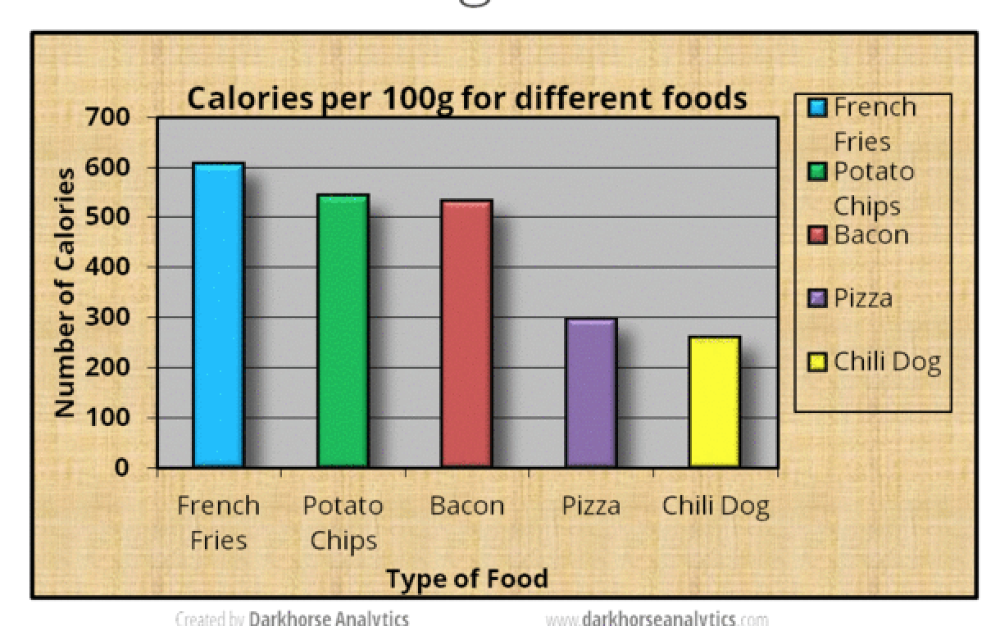 (Source: (Plotly 2017))
 (Source: (Plotly 2017))
(Source: (Plotly 2017))
Always revise and edit
 (Source: (Tufte 1986))
(Source: (Tufte 1986))
kwright76_submit When creating visualizaitons, information is best displayed by adhering to the data to pixel ratio rule. This rule states that a visulaization should contain as much data as possible while also using as little pixels as possible. Through a comprehensive editing and testing process, any visualization can continually be improved upon. The main stakeholder of any visualization is the audience and their ability to understand what the visualization is trying to get across. Although if an audience member is not able to understand the visualization, there is nothing lost, but for those that do understand it, something is gained. It is a great feat for an audience member to be able to understand a statistical graphic because it is the most frequently made mistake in underestimating an audience. New designs, although may appear odd, have not been seen before and can be successful visualizations. Therefore, visualizations that produce a lot of data with the space provided with detailed statistics and are able to be understood by a wide array of audiences are produced with a well put together revising and testing system. contributions
2.1.3.2 Principle 2: Mobilize every graphical element, perhaps several times over, to show the data.
The danger of multifunctioning elements is that they tend to generate graphical puzzles, with encodings that can only be broken by their inventor. Thus design techniques for enhancing graphical clarity in the face of complexity must be developed along with multifunctioning elements. In other words, we should try to make all present graphical elements data encoding elements. We must make every graphical element effective (See the following example).
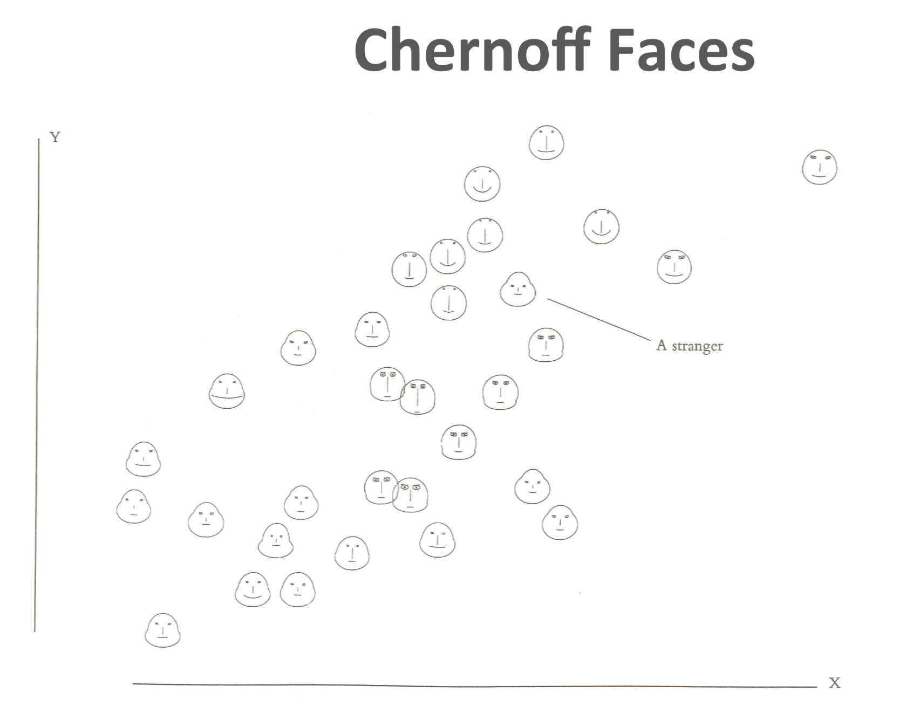 (Source: (Tufte 1986))
2.1.3.3 Principle 3: Maximize data density and the size of the data matrix, within reason.
High preformation graphics should be designed with special care. As the volume of data increases, data measures must shrink (smaller dots for scatters, thinner lines for busy time-series).
\[{Data \ Density} = \frac{{Entries \ in \ the \ Data \ Matrix}}{{Area \ of \ Chart}}\]
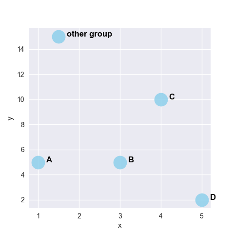 (Source: (gallery, n.d.))
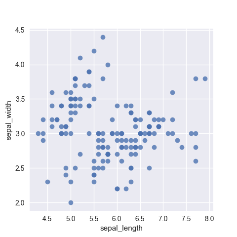 (Source: (gallery, n.d.))
2.1.3.4 Principle 4: Escape flatland - small multiples, parallel sequencing.
Data is multivariate doesn’t necessarily mean 3D projection. How can we enhance multivariate data on inherently 2D surfaces? We can use small multiple graphs or parallel sequencing skill.
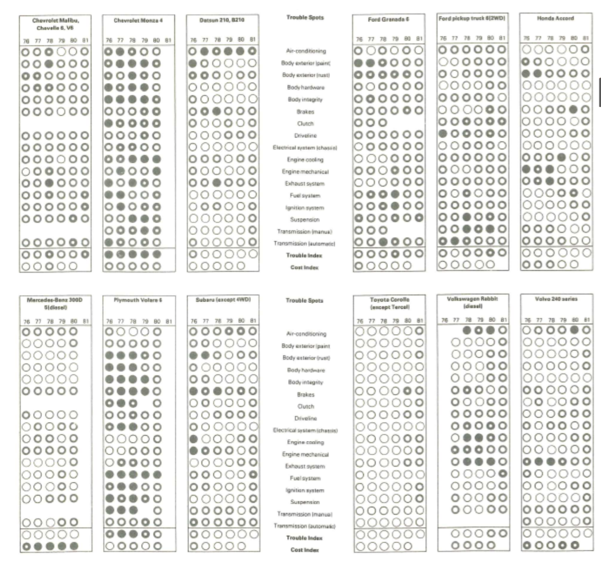 (Source: (Tufte 1986))
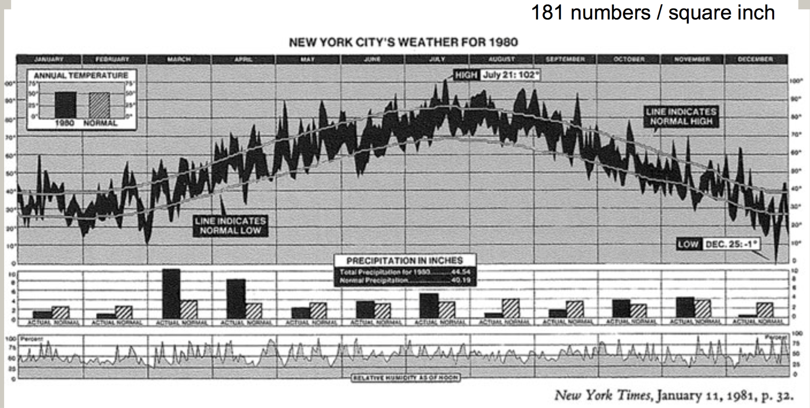 (Source: (Tufte 1986))
2.1.3.5 Principle 5: Provide the user with an overview and details on demand.
A carefully designed view can show a macrostructure (overview) as well as microstructure (detail) in one space.
 (Source: (Tufte 1986))
(Source: (Tufte 1986))
2.1.3.6 Principle 6: Utilize Layering & Separation.
- Supported by Gestalt laws (The principles of grouping):
- Grouping with colors
- Using Color to separate
- 1 + 1 = 3 (clutter)
Graphics are almost always going to improve as they go through editing, revision, and testing against different design options.
Try to figure out whether the audience looking at the new designs be confused? Nothing is lost to those puzzled by the frame of dashes, and something is gained by those who do understand. We should always be aware of the audience for whom we are making the charts. Furthermore, it is always not safe to assume that if you understand the statistical graphics, your readers will too.
(Source: (Tufte 1986))
 (Source:
(Source:  (Source:
(Source: 2.1.4 Common Mistakes to Avoid:
| Mistake | Description |
|---|---|
| Starting off with too much complexity | It’s tempting to provide highly detailed, real-time dashboards. Instead of spending a lot of time working through the first iteration, however, it’s better to work through several short cycles of prototyping, testing and adjusting. |
| Using metrics no one understands | Dashboards should use metrics or concepts that a broader audience understands. Esoteric jargon and metrics will not help get a message across. |
| Cluttering the dashboard with unimportant graphics and unintelligible widgets | Dashboards should be simple in visual appeal, rather than flashy or over-designed; rapidly and easily informing the audience of the primary message of the dashboard should be the priority, and clutter will only detract from that. |
| Waiting for complex technology and big BI deployment projects | Implementations of some of traditional business intelligence tools often take a much longer time than originally anticipated. Waiting for a traditional BI project to materialize may mean delays. A dashboarding solution takes a long time to implement and is a repetitive, iterative process with incremental improvements. |
| Underestimating the time or resources to create and maintain the dashboard | Even though a dashboard is typically one page or one screen, it would be injudicious to assume that it will be quick and simple to create and maintain. |
| Failing to match metrics to the goal | Instead of showcasing the activities of a single department, a dashboard should connect the department’s efforts to the organization’s actual goals and objectives |
| Using ineffective, poorly designed graphs and charts | While designing graphs and charts for dashboard, extreme care should be taken. Principles for designing good data visualizations should be followed to avoid dashboards populated with poorly designed graphs and charts. |
2.2 Best Practices
Data visualization does not unleash a ready-made story on its own. There are no rules or protocols to guarantee a story. Instead, we need to look for insights, which can be artfully woven into stories in the hands of a good journalist (Jonathan Gray and Chambers 2012).
Here is a process for finding insights that tell a story. Each of these steps will be discussed further in this section.
2.2.1 Telling a Story with Insights.
Storytelling is an essential component of data visualization. The visualization must communicate complex ideas with precision and efficiency. The presenter must understand their audience’s level of understanding and tailor their visualizations accordingly. An audience’s level of analysis is key to creating and presenting a compelling story. Stikeleather’s article outlined five key points to consider for telling a compelling story through a visualization(Jim Stikeleather 2013).
- Find the Compelling Narrative
- Understand your Audience
- Be Objective and Offer Balance
- Don’t Censor
- Edit
2.2.2 How to choose the best form of Visualization
Since just loading data into a table format could be a form of visualization, our focus should not be whether visualization is needed but on which form of data visualization is best for the situation.
| Focus | Description |
|---|---|
| 5 Second Rule | Research shows that the average modern attention span for viewing anything online is less than 5 seconds, so if you can’t grab attention within 5 minutes, you’ve likely lost your viewer. Include clear titles and instructions, and tell people succinctly what the visualization shows and how to interact with it. |
| Design and layout matter | The design and layout should facilitate ease of understanding to convey your message to the viewer. Artists use design principles as the foundation of any visual work. If you want to take your data visualization from an everyday dashboard to a compelling data story, incorporate graphic designer Melissa Anderson’s principles of design: balance, emphasis, movement, pattern, repetition, proportion, rhythm, variety, and unity, discussed in more detail in the design principles section (Anderson 2017). |
| Keep it simple | Keep charts simple and easy to interpret. Instead of overloading viewers’ brains with lots of information, keep only necessary elements in the chart and help the audience understand quickly what is going on. |
| Pretty doesn’t mean effective | There is a misconception that aesthetically pleasing visualization is more effective. To draw attention, sometimes we want them to be pretty and eye-catching. But if it fails to communicate the data properly, you’ll lose your audience’s interest as quickly as you gained it. |
| Use color purposely and effectively | Use of color may be prettier and attractive but can be distracting too. Thus, the color should be used only if it assists in conveying your message. Also another thing to keep in mind is to be consistent with the color scheme that the organization/consumer is used to and also try and follow the same color across dashboards while communicating a story. |
2.2.2.1 Choosing suitable Visualization for various types of Data Analysis
Choosing the right chart for data analysis helps in achieving the Visualization purpose. Here are some of the most commonly used analysis types and which chart types are most suitable for them.
2.2.2.1.1 Trend Analysis
It is an analysis of the rate of growth or decline (trend) between different periods of time. We can choose to compare any hour, day, month, or year with any other hour, day, month, or year. Also, we can visualize a trend in both real values and percentage changes. It allows to “see this” before “analyze this” and to take advantage of human eye ability to recognize trends quicker than any other methods.
Type of Charts for Trend Analysis - Time Series Chart (using line or bar) - Motion Chart - Sparklines - Scatter
Examples of Trend Analysis - Time Series Chart (using line): A time series chart, also called a times series graph or time series plot, is tool that illustrates data points at successive intervals of time. Each point on the chart corresponds to both a time and a quantity that is being measured.
 (Source: (“Time Series Chart Using Line,” n.d.))
(Source: (“Time Series Chart Using Line,” n.d.))
- Time Series Chart (using Bar)
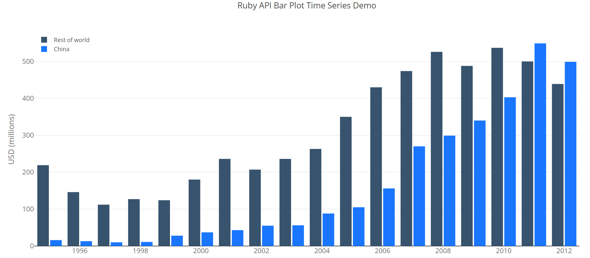
(Source: (“Time Series Chart Using Bar,” n.d.))
- Motion Chart: A motion chart is a dynamic and interactive visualization tool for displaying complex quantitative data. Motion charts show multidimensional data on a single two dimensional plane. Dynamics refers to the animation of multiple data series over time. Interactive refers to the user-controlled features and actions when working with the visualization. Innovations in statistical and graphics computing made it possible for motion charts to become available to individuals. Motion charts gained popularity due to their use by visualization professionals, statisticians, web graphics developers, and media in presenting time-related statistical information in an interesting way. Motion charts help us to tell stories with statistics.
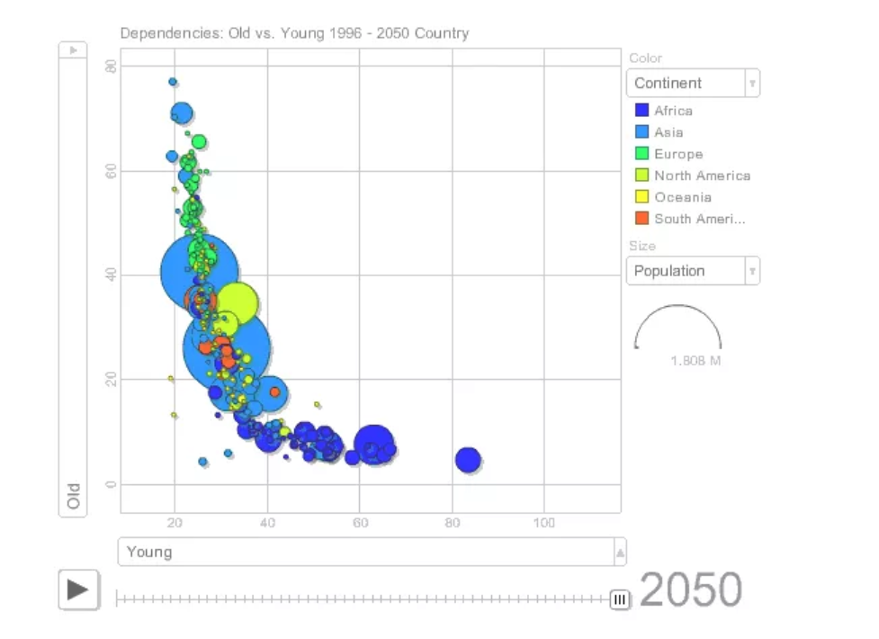 (Source: (“Motion Chart,” n.d.))
- Sparklines: A sparkline is a small embedded line graph that illustrates a single trend. Sparklines are often used in reports, presentations, dashboards and scoreboards. They do not include axes or labels; context comes from the related content.
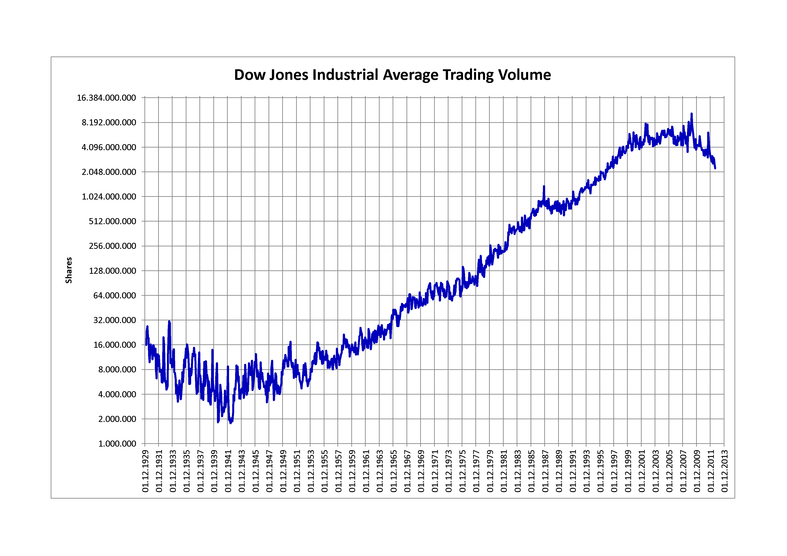 (Source: (“Sparkline Chart,” n.d.))
- Scatter: A scatter plot is a two-dimensional data visualization that uses dots to represent the values obtained for two different variables - one plotted along the x-axis and the other plotted along the y-axis. Scatter plots are very useful tools for conveying the relationship between two variables, but you need to know how to use them and interpret them properly
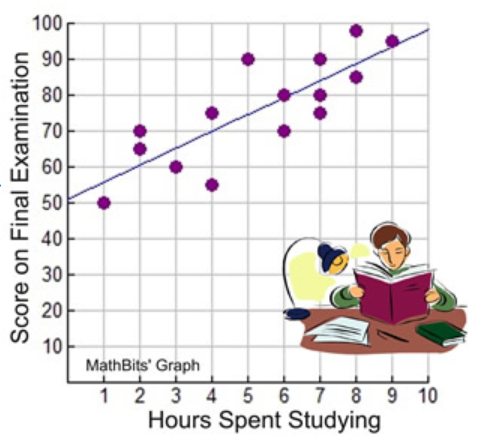 (Source: (“Scatter Chart,” n.d.))
2.2.2.1.2 Correlation
Discovering relationships between measures—it’s something we do all the time in data analysis. Does smoking cause cancer? Does the price of a product impact the amount that gets sold? Running a simple correlation analysis is a crucial step in identifying relationships between measures. To confirm if the potential relationship truly exists, sophisticated methodologies are required to visually represent correlations between pairs of variables in a consistent way.
Scatter Plot : When two variables are numeric, a scatter plot is typically sufficient in representing their qualitative level of dependency. The two plots below, for example, were generated from data in the 2009-2010 National Health and Nutrition Survey, and compare two variables, arm circumference and standing height, with BMI (Body Mass Index) for adult individuals (18-65 years of age). In the first case there is a clear association between arm circumference and BMI, while in the second comparison, standing height is most likely independent from BMI. Visually, a functional relationship between two variables can be identified quite easily, even when there is a large amount of noise in the scatter plot.
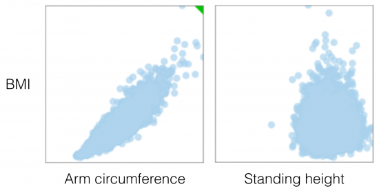 (Source: (Andres 2014))
Bubble Chart : It’s a great option if there is need to add another dimension to a scatter plot chart. Scatter plots compare two values, but you can add bubble size as the third variable and thus enable comparison. A good example of a bubble chart would be a graph showing marketing expenditures vs. revenue vs. profit. A standard scatter plot might show a positive correlation for marketing costs and revenue (obviously), when a bubble chart could reveal that an increase in marketing costs is chewing on profits.
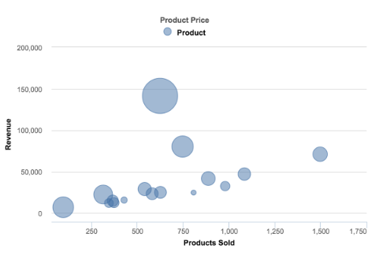 (Source: (Janis Gulbis 2016))
Heatmap : Heatmap depicts a pair-wise correlation matrix leveraged from different data attributes. This not only provides us with a numerical value of the correlation between each variable, but also provides us with an easy to understand visual representation of those numbers with high correlation to none or negative correlation. It is one of the simplest plots to create but is also one of the most informative and can guide our hand in generating other plots to investigate the numbers it has brought forward.
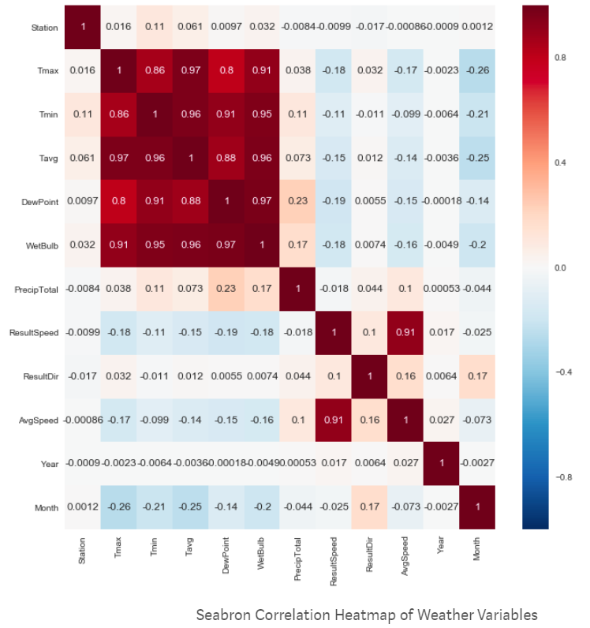 (Source: (Plapinger 2017))
2.2.2.1.3 Part to Whole
There are occasions when analysis requires visualisation methods that show part (or parts) of a variable to it’s total. Often used to show how something is divided up.
Pie Chart : They are best suited to show proportional or percentage relationships. When used appropriately, pie charts can quickly show relative value to the other data points in the measure. They can be used if you really must but be aware that they are not always very accurate in depicting data. If there are more than six proportions to communicate, bar chart can be considered. It becomes too difficult to meaningfully interpret the pie pieces when the number of wedges gets too high. For example, if you didn’t have the actual data points in the pie chart below we wouldn’t be able to tell which region had more sales West or Central; as the slices of the pie are so similar in size.
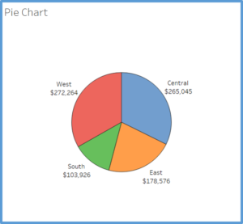 (Source: (Strachnyi 2018))
Stacked Bar Chart : A better option for visualizing the parts-to-whole relations of a data set is the bar chart. This is because it lets us compare the different objects by their length, which is one dimensional. Comparing objects along one dimension is a lot easier than along two, which makes comparing the length of bars a lot easier than the areas of pie slices. Stacked bar chart shows data in categories that are also stratified into sub-categories. In the example below we have sum of sales by product type and further divided into region. It allows us to see more details than the regular bar chart would provide.
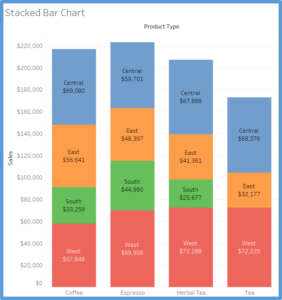 (Source: (Strachnyi 2018))
Side by Side Bar Chart : Similar to bar charts, this chart shows a side by side comparison of data. In the below example we are looking at regions and types of product (decaf vs. regular). The use of color makes it easier to compare the sum of sales within each region for different product types. The side-by-side bar chart is similar to the stacked bar chart except the bars are un-stacked and put the bars side by side along the horizontal axis.
(Source: (Strachnyi 2018))
Treemap : Treemap is used to show hierarchical (tree-structured) data and part-to-whole relationships. Treemapping is ideal for showing large amounts of items in a single visualization simultaneously. This view is very similar to a heat map, but the boxes are grouped by items that are close in hierarchy.
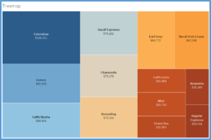 (Source: (Strachnyi 2018))
Square Pie Charts : Regular pie charts have their issues with the perception of angle and arc length, but their main advantage is that they represent parts of a whole. The metaphor is universally known. The square pie chart offers an alternative without sacrificing the metaphor, and are easier to read and more accurate at showing data. Designers like this one a lot when they want to focus on a single data point. It takes up a lot of space, but sometimes puts things in better perspective. Basically instead of showing each data point, you’re showing every individual count within a data point.
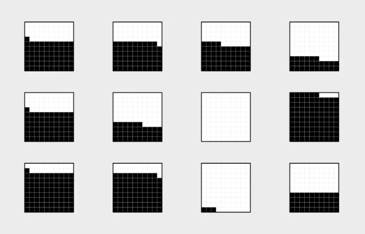 (Source: (Yau 2018))
2.2.2.1.4 Geographical Data
Maps are ideal to show data on location. Maps are often best when paired with another chart that details what the map displays — such as a bar chart sorted from greatest to least, a line charts showing the trends, or even just a cross-tab to show the actual data. Although pie charts are not recommended for part-to-whole relationship, pie charts can be used on maps, such as in the website-traffic map below. By using pies on the map, we get a rough breakdown view of each country, which can be very useful when complemented by other chart types like the ones mentioned previously.
 (Source: (n.d.))
(Source: (n.d.))
2.2.3 Analyze and Interpret
Once data is visualized, the next step is to learn something from visualization that was created. The single most important step to make a great visualization is to know what you’re trying to say. It is vital that a visualization has a purpose and that one is selective about what to include in the visualization to fulfill that purpose. A few general questions that can be asked to determine the purpose of a visualization include: * Who is the audience of the visualizations? * What questions do they have? * What answers does the visualization provide them? * What other questions does it inspire? * What conversations will result? and so on…
The point is that the viewers should take something away from the time they spend with the visualization. (Software 2019)
2.2.3.1 Macro/Micro Views - Provide the user with both views (overview and detail) - (Tufte’s Design Principle 2)
A carefully designed view can show a macro structure (overview) as well as micro structure (detail) in one space.
- What can be seen in this image? Is it what was expected?
- Are there any interesting patterns?
- What does this mean in context of the data?
Sometimes we might end up with visualization that, in spite of its beauty, might seem to tell that nothing of interest can be found from the data. But there is almost always something that we can learn from any visualization, however trivial.
2.2.3.2 Checking if the visualization answers the intended questions
Often it helps to ask what questions is the visualization trying to answer? Following which, it is easier to evaluate a visualization by asking some of the following questions: (Software 2019)
Overall message/ Warrant/ Claim * What is the overall message or claim or warrant that the visualization is trying to make? * Does the visualization jusity the claim?
Title * Does the visualization include a title? Is that title simple, informative, and eye-catching? * Is the purpose of the visualization clearly explained in its title or surrounding text?
Interpretation * Can one understand the visualization in 30 seconds or less, without additional information? * Does the visualization include subtitles to guide your viewers?
2.2.3.3 Using the right chart types
Another important aspect to consider is how effective are chart views in terms of measures & dimensions, colors, etc. It helps to ask the following questions:
- What types of analysis is being performed?
- Is the chart type(s) most suitable for the type of analysis?
- Are there alternative chart types that could work better than the chosen ones?
More information on Chart Types can be referred here (Software 2019) and using Tableau online documentation.
2.2.3.4 Ensuring the dashboard has a holistic design
- Do all views fit together to tell a single story?
- Do all views flow well from one to the next? Are they in a good order?
- Does the most important view appear in the top or top-left corner?
- Are secondary elements in the dashboard placed well so they support the views without interrupting them?
- Are filters in the right locations?
- Do filters work correctly? Do views become blank or downright confusing if a filter is applied?
- Do filters apply to the right scope?
- Are filter titles informative? Can viewers easily understand how to be interactive with the filters?
- Are legends close to the views they apply to?
- Are there any filter, highlight or URL actions? If so, do they work?
- Are legends and filters grouped and placed intuitively?
- Are there scrollbars in the views? If so, are they acceptable?
- Are the views scrunched?
- Do the views fit consistently when filters are applied?
2.2.3.5 Evaluating effectiveness through measures, dimensions, colors etc.
- Are the most important data shown on the X and Y-axes and less important data encoded in color or shape attributes?
- Are views oriented intuitively? Do they cater to the way the intended audience would read and perceive data?
- Are number of measures or dimensions limited in a single view so that users can see the data?
- Is the usage of colors and shapes limited so that users can distinguish them and see patterns?
2.2.3.6 Final touches
- Do all colors on the dashboard go together without clashing?
- Are there less than 7-10 colors on all the dashboards?
- Are fonts used consistently in all of the dashboards/ views and there are no more than three different fonts on one dashboard?
- Are the labels clear and concise? Are they placed optimally to help guide the viewers? Make sure subtitles are formatted to be subordinate to the main title.
- Are tooltips informative? Do they have the right format so that they’re easy for the audience to use?
2.2.4 Document Your Insights and Steps
If you think of this process as a journey through the dataset, the documentation is your travel diary. It will tell you where you have traveled to, what you have seen there and how you made your decisions for your next steps. You can even start your documentation before taking your first look at the data.
In most cases when we start to work with a previously unseen dataset, we are already full of expectations and assumptions about the data. Usually, there is a reason why we are interested in that dataset that we are looking at. It’s a good idea to start the documentation by writing down these initial thoughts. This helps us to identify our bias and reduces the risk of misinterpretation of the data by just finding what we originally wanted to find.
Personally speaking, the documentation is the most important step of the process, and it is also the one people most likely to skip. As you will see in the example below, the described process involves a lot of plotting and data wrangling. Looking at a set of 15 charts you created might be very confusing, especially after some time has passed. In fact, those charts are only valuable (to you or any other person you want to communicate your findings) if presented in the context in which they have been created.
2.2.5 Transform Data
Naturally, with the insights that you have gathered from the last visualization, you might have an idea of what you want to see next. You might have found some interesting pattern in the dataset which you now want to inspect in more detail. Possible transformations are the following.
Focusing the attention: What can be removed? Realize that consistency can help eliminate unnecessary distractions. There may be a trade-off between losing information but conveying the ultimate meaning more clearly. Label important things rather than relying on a legend, which requires the viewer to hold on to too much information at once.
| Transformation | Description |
|---|---|
| Zooming | This allows us to have look at a certain detail in the visualization Aggregation To combine many data points into a single group |
| Filtering | This helps us to (temporarily) remove data points that are not in our major focus |
| Outlier handling | This allows us to get rid of single points that are not representative of 99% of the dataset. |
Let’s consider the following example: You have visualized a graph and what came out of this was nothing but a mess of nodes connected through hundreds of edges (a very common result when visualizing so-called densely connected networks), one common transformation step would be to filter some of the edges. If, for instance, the edges represent money flows from donor countries to recipient countries, we could remove all flows below a certain amount (n.d.).
2.2.6 Adapt your story to a different set of audiences
Jonathon Corum is a graphics designer for The New York Times and he provided a very informative talk to a strictly scientific audience on how to create and design visualizations that explain material originally created for a certain audience, i.e. the scientific community, but now is to be related to a different audience (in his case, the readership of the Times or maybe the public at large). The talk is filled with examples and breakdowns of how he has moved from his base content to the final product, all of which are illuminating examples by themselves. There is also great power in the broader themes that he is trying to convey.
Of course, it is easy to assume that we know the audience we are producing the work for, but even in this step, we should focus on the ultimate goal of conveying, understanding and explaining a concept. Some of the main highlights to help make this connection with the audience involved are mentioned below:
| Principle | Description |
|---|---|
| Focusing the attention | What can be removed? Realize that consistency can help eliminate unnecessary distractions. There may be a trade-off between losing information but conveying the ultimate meaning more clearly. Label important things rather than relying on a legend, which requires the viewer to hold on to too much information at once. |
| Involving your audience | Give them opportunities to connect their own general knowledge on the topic. Use real world comparisons or examples to help build and relate context. Encourage comparisons and make this easy for the viewer to process and see. |
| Explaining why | Providing context, adding time sequence details, showing movement, change and mechanism will all guide your audience in connecting the dots and understanding the significance of what you are trying to communicate. |
2.2.7 Developing Intuitive Dashboards
Often, data visuals end up too intricate and overly complicated. A dashboard should be appealing but also easy to understand. Following these rules will lead to the effective presentation of the data.
| Best Practice | Description |
|---|---|
| The dashboard should read left to right | Because we read from top to bottom and left to right, a reader’s eyes will naturally look in the upper left of a page. The content should therefore flow like words in a book. It is important to note that the information at the top of the page does not always have to be the most important. Annual data is usually more important to a business but daily or weekly data could be used more often for day to day work. This should be kept in mind when designing a dashboard since dashboards are often used as a quick convenient way to look up data. |
| Group related information together | Grouping related data together is an intuitive way to help the flow of the visual. It does not make sense for a user to have to search in different areas to find the information they need. |
| Find relationships between seemingly unrelated areas and display visuals together to show the relationship. | Grouping unrelated data seems contradictory to the second rule, but the important thing is to tell a story not previously observed. Data analytics is all about finding stories the data are trying to tell. Once they are discovered, the stories need to be presented in an effective manner. Grouping unrelated data together makes it easier to see how they change together. |
| Choose metrics based on why they matter | Chosen metrics should be important and relevant to the current task. That doesn’t mean that each metric ought to be incorporated. You ought to be highly selective in determining which metrics earn a spot on your dashboard. Organization’s core objectives, availability of data that can shed light on the objectives, effectiveness of metric to explain contribution to the objectives etc. are some of the aspects to consider while choosing metrics. In short, every metric on your dashboard should connect to the organization objectives. |
| Keep it visual | Dashboards are meant to be fast and easy to read. A well-designed, highly visual dashboard will be more widely adopted by audiences. Since metrics are also chosen in line with corporate objective, it will help in speeding peoples’ understanding. This will also help see the translation of individual department objectives into broader organizations objective. |
| Make it interactive | Interactive, highly visual dashboards should enable audience to perform basic analytical tasks, such as filtering the views, drilling down, examining underlying data etc. Viewers should be able to get the big picture from the dashboard and then be able to drill down into a view that tells them the information they need to get their jobs done. |
| Keep it current or don’t bother | Selected metrics should reflect current business challenges. You don’t need up-to-the-minute data. Data can be current quarterly, weekly, hourly, etc. as relevant to the timeline of the organization. Ability to change and update the metrics represented in the dashboard is an important aspect. |
| Make it simple to access and use | Making dashboards easily accessible is critical. Web distribution is ideal for this - especially if dashboards can constantly pull current data and can adhere to IT protocols and security standards. Another alternative is posting files on websites, Wiki’s or blogs. |
2.2.8 More on Best Practices
| Five Practices | Explanation |
|---|---|
| Find the compelling narrative | Along with giving an account of the facts and establishing the connections between them, don’t be boring. You are competing for the viewer’s time and attention, so make sure the narrative has a hook, momentum, or a captivating purpose. Finding the narrative structure will help you decide whether you actually have a story to tell. If you don’t, then perhaps this visualization should support exploratory data analysis (EDA) rather than convey information. |
| Think about the audience | If you think about data visualization as storytelling, then you realize you need to tailor your story to your audience; Novice: first exposure to the subject, but doesn’t want oversimplification; Generalist: aware of the topic, but looking for an overview understanding and major themes; Managerial: in-depth, actionable understanding of intricacies and interrelationships with access to detail; Expert: more exploration and discovery and less storytelling with great detail; Executive: only has time to glean the significance and conclusions of weighted probabilities. When you tell the right story to the right audience you are able to identify data points that resonate with the audience. |
| Be objective and offer balance | A visualization should be devoid of bias. Even if it is arguing to influence, it should be based upon what the data says–not what you want it to say. There are simple ways to encourage objectivity: labeling to avoid ambiguity, have graphic dimensions match data dimensions, using standardized units, and keeping design elements from compromising the data. Balance can come from alternative representations (multiple clustering’s; confidence intervals instead of lines; changing timelines; alternative color palettes and assignments; variable scaling) of the data in the same visualization. |
| Don’t censor | Don’t be selective about the data you include or exclude, unless you’re confident you’re giving your audience the best representation of what the data “says”. This selectivity includes using discrete values when the data is continuous; how you deal with missing, outlier and out of range values; arbitrary temporal ranges; capped values, volumes, ranges, and intervals. Viewers will eventually figure that out and lose trust in the visualization (and any others you might produce). |
| Edit, Edit, Edit | Take care to really try to explain the data, not just decorate it. Don’t fall into “it looks cool” trap, when it might not be the best way explain the data. As journalists and writers know, if you are spending more time editing and improving your visualization than creating it, you are probably doing something right. |
2.3 Dashboards
(Few 2007) > “A dashboard is a visual display of the most important information needed to achieve one or more objectives; consolidated and arranged on a single screen so the information can be monitored at a glance.” -Stephen Few
Dashboards display aggregated information visually and understandably. They give a comprehensive overview of a company, business department, process or project concerning achieving specific objectives, that are measured by Key Performance Indicators (KPIs). Also, they provide easy and immediate access to actionable analytics that can affect the bottom line of an entity.
Some of the advantages associated with dashboards are:
- They are customizable
- They are interactive
- They allow for Real-Time monitoring
- All of the data is in one place
- They are intuitive
- They get everyone on the same page
- They are capable of gaining viewers focus
Below is an example of a dashboard for a logistics of a transportation industry. When it comes to logistics, every moment matters, and maximum deliveries are expected to be on time. This transportation dashboard makes it easy with delivery status, fleet efficiency, average loading time and other logistics KPIs. (Lebied 2017)
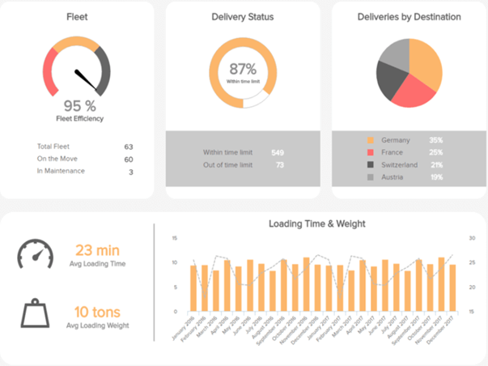
2.4 Data Visualization Tools
Due to the rise of big data analytics, there has been an increased need for data visualization tools to help understand the data. Besides Tableau, there are several other software tools one can use for data visualization like Sisense, Plotly, FusionCharts, Highcharts, Datawrapper, and QlikView. This article is from Forbes and has a brief, clear introduction about these 7 powerful software options for data visualization. This could be helpful for future reference because for different purposes I may need to use different tools. Each option has its advantages and disadvantages and this article helps highlight them.
2.4.1 Brief Description of popular tools
| Tool | Description |
|---|---|
| Tableau | The most popular in the group and has many users. It is simple to use, making it easy to learn and can handle large datasets. Tableau can handle big data thanks to integration with database handling applications such as MySQL, Hadoop, and Amazon AWS. |
| Qlikview | The main competitor to Tableau and also quite popular. Qlikview is customizable and has a wide range of features which can be a double-edged sword. These features take more time to learn and get acquainted with. However, once one gets past the learning curve, they have a powerful tool at their disposal. |
| FusionCharts | The distinctive aspect of FusionCharts is that graphics do not have to be created from scratch. Users can start with a template and insert their own data from their project. |
| Highcharts | It proudly claims to be used by 72% of the 100 biggest companies in the world. It is a simple tool that does not require specialized training and quickly generates the desired output. Unlike some tools, Highcharts focuses on cross-browser support, allowing for greater access and use. |
| Datawrapper | It is making a name for itself in the media industry. It has a simple user interface making it easy to generate charts and embed into reports. |
| Plotly | It can create more sophisticated visuals thanks to integration with programming languages such as Python and R. The danger is creating something more complicated than necessary. The whole point of data visualization is to quickly and clearly convey information. |
| Sisense | It can bring together multiple sources of data for easier access. It can even work with large data sets. Sisense makes it easy to share finished products across departments, ensuring everyone can get the information they need. |
| Altair | It is a statistical visualization library for Python, based on Vega and Vega-Lite. Its sources are widely available on GitHub. With Altair, we can understand the data and its meaning in a better way. Altair’s API is very simple to use. This is simple, elegant and produces beautiful and effective visualizations with a minimal amount of code. |
| Shiny | Shiny is an open package from RStudio, which provides a web application framework to create interactive web visualization called Shiny apps. The ease of working with Shiny has what popularized it among R users. |
| Microsoft Office | Microsoft Office uses a variety of tools and combined with their data source, excel, it can create simple, well designed, and intuitive graphs. Excel is a very popular took for viewing raw data, and there are tools within the program to create graphs based on the data. |
| Google Suite | Google Suite includes their docs, sheets, and slides (among others). Sheets is a great tool for holding raw data, similar to Excel. Within sheets, theres are simple tools to create graphs that quickly update based on the changing data. One significant quality Google Suite provides is the interactivity and availability for collaboration on the same documents. |
2.4.2 Interactive Data Visualization
Interactive or Dynamic data visualization delivers today’s complex sea of data in a graphically compelling and an easy-to-understand way. It enables direct actions on a plot to change elements and link between multiple plots. It enables users to accomplish traditional data exploration tasks by making charts interactive (Kerschberg 2014). Interactive Data Visualization Software has the following benefits:
| Benefit | Description |
|---|---|
| Absorb information in constructive ways | With the volume and velocity of data created every day, dynamic data viz enables enhanced process optimization, insight discovery and decision making. |
| Visualize relationships and patterns | Helps in better understanding of correlations among operational data and business performance. |
| Identify and act on emerging trends faster | Helps decision makers to grasp shifts in behaviors and trends across multiple datasets much more quickly. |
| Manipulate and interact directly with data | Enables users to engage data more frequently. |
| Foster a new business language | Ability to tell a story through data that instantly relates the performance of a business and its assets. |
There are multiple ways by which interactive data visualizations can be developed. D3.js is one of the ways to build an interactive data visualization.
2.4.3 Python for Data Visualization：10 Useful Python Data Visualization Libraries
(Bierly 2016)
It starts with the insights of learning d3.js by showing interviews with those top visualization practitioners. Then the author gives key concepts and useful features for learning visualization like d3-shape, d3 selection, d3-collection, ds-hierarchy, ds-zoom as well as d3-force. Sample charts for each
| Library | Description |
|---|---|
| Matplotlib | Because matplotlib was the first Python data visualization library, many other libraries are built on top of it or designed to work in tandem with it during analysis. While matplotlib is good for getting a sense of the data, it’s not very useful for creating publication-quality charts quickly and easily. |
| Seaborn | Seaborn harnesses the power of matplotlib to create beautiful charts in a few lines of code. The key difference is Seaborn’s default styles and color palettes, which are designed to be more aesthetically pleasing and modern. Since Seaborn is built on top of matplotlib, you’ll need to know matplotlib to tweak Seaborn’s defaults. |
| Ggplot | ggplot is based on ggplot2, an R plotting system, and concepts from The Grammar of Graphics. ggplot operates differently than matplotlib: it lets you layer components to create a complete plot. For instance, you can start with axes, then add points, then a line, a trendline, etc. Although The Grammar of Graphics has been praised as an “intuitive” method for plotting, seasoned matplotlib users might need time to adjust to this new mindset. |
| Bokeh | Like ggplot, Bokeh is based on The Grammar of Graphics, but unlike ggplot, it’s native to Python, not ported over from R. Its strength lies in the ability to create interactive, web-ready plots, which can easily give the output as JSON objects, HTML documents, or interactive web applications. Bokeh also supports streaming and real-time data. |
| Pygal | Like Bokeh and Plotly, pygal offers interactive plots that can be embedded in the web browser. Its prime differentiator is the ability to output charts as SVGs. As long as you’re working with smaller datasets, SVGs will do you just fine. But if you’re making charts with hundreds of thousands of data points, they’ll have trouble rendering and SVG will become sluggish. |
| Plotly | You might know Plotly as an online platform for data visualization, but did you also know you can access its capabilities from a Python notebook? Like Bokeh, Plotly’s forte is making interactive plots, but it offers some charts you won’t find in most libraries, like contour plots, dendograms, and 3D charts. |
| Geoplotlib | geoplotlib is a toolbox for creating maps and plotting geographical data. You can use it to create a variety of map-types, like choropleths, heatmaps, and dot density maps. You must have Pyglet (an object-oriented programming interface) installed to use geoplotlib. Nonetheless, since most Python data visualization libraries don’t offer maps, it’s nice to have a library dedicated solely to them. |
| Gleam | Gleam is inspired by R’s Shiny package. It allows you to turn analyses into interactive web apps using only Python scripts, so you don’t have to know any other languages like HTML, CSS, or JavaScript. Gleam works with any Python data visualization library. Once you’ve created a plot, you can build fields on top of it so that users can filter and sort data. |
| Missingno | Dealing with missing data is a pain. Missingno allows you to quickly gauge the completeness of a dataset with a visual summary, instead of trudging through a table. You can filter and sort data based on completion or spot correlations with a heatmap or a dendrogram. |
| Leather | Leather’s creator, Christopher Groskopf, puts it best: “Leather is the Python charting library for those who need charts now and don’t care if they’re perfect.” It’s designed to work with all data types and produces charts as SVGs, so you can scale them without losing image quality. Since this library is relatively new, some of the documentation is still in progress. The charts you can make are pretty basic but that’s the intention. |
2.4.4 R for Data Visualization: Grammar of Graphics
Chapter 3 of Grolemund and Wickham’s “R for Data Science” (Grolemund and Wickham 2017)
2.4.4.1 Layered Grammar of Graphics:
The grammar of graphics is based on the implication that you can uniquely describe any plot as a combination of
- a dataset
- a geom
- a set of mappings
- a stat
- a position adjustment
- a coordinate system
- a faceting scheme.
2.4.4.2 Aes/Mapping: Global Mapping and Local Mapping
Formula:
\[ggplot(data = DATA) + GEOMFUNCTION (mapping = aes(MAPPINGS),stat =STAT, position = POSITION ) + COORDINATEFUNCTION + FACETFUNCTION\]
library("tidyverse")## ── Attaching packages ──────────────────────────────────────────────── tidyverse 1.2.1 ──## ✔ ggplot2 3.1.1 ✔ purrr 0.3.2
## ✔ tibble 2.1.1 ✔ dplyr 0.8.0.1
## ✔ tidyr 0.8.3 ✔ stringr 1.4.0
## ✔ readr 1.3.1 ✔ forcats 0.4.0## ── Conflicts ─────────────────────────────────────────────────── tidyverse_conflicts() ──
## ✖ dplyr::filter() masks stats::filter()
## ✖ dplyr::lag() masks stats::lag()library("gapminder")
ggplot(data = mpg, mapping = aes(x = displ, y = hwy)) + geom_point(mapping = aes(color = class)) + geom_smooth()## `geom_smooth()` using method = 'loess' and formula 'y ~ x'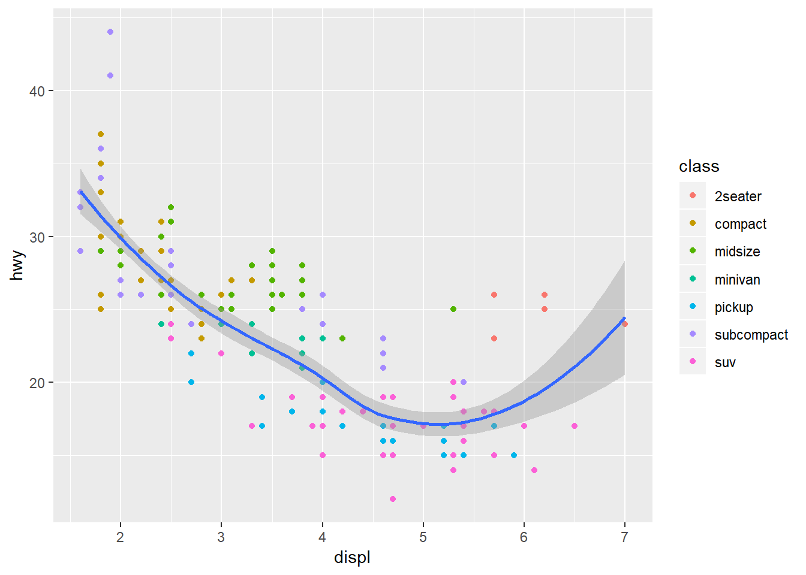
Here, “mapping = aes(x = displ, y = hwy)” is a global mapping, where “mapping = aes(color = class)” is a local mapping.
2.4.4.3 Position Adjustment
- “Identity” position will place each object exactly where it falls in the context of the graph. This is not very useful for bars.
- “Fill” position works like stacking, but makes each set of stacked bars the same height. This makes it easier to compare proportions across groups.
- “Dodge” position places overlapping objects directly beside one another, which makes it easier to compare individual values.
- “Jitter” position adds a small amount of random noise to each point. This spreads the points out because no two points are likely to receive the same amount of random noise.
2.4.4.4 Coordinate Systems
The default coordinate system is Cartesian.
| Command | Description |
|---|---|
| coord_flip() | It switches the x- and y-axes. Very useful if you want horizontal boxplots. |
| coord_quickmap() | It sets the aspect ratio correctly for maps. This is very important if you draw a map. |
| coord_polar() | It uses polar coordinates. Polar coordinates reveal interesting connections between a bar chart and a Coxcomb chart. |
| coord_quickmap() | sets the aspect ratio correctly for maps. This is very important if you draw a map. |
| coord_polar() | uses polar coordinates. Polar coordinates reveal interesting connections between a bar chart and a Coxcomb chart. |
ggplot(data = mpg, mapping = aes(x = class, y = hwy)) + geom_boxplot()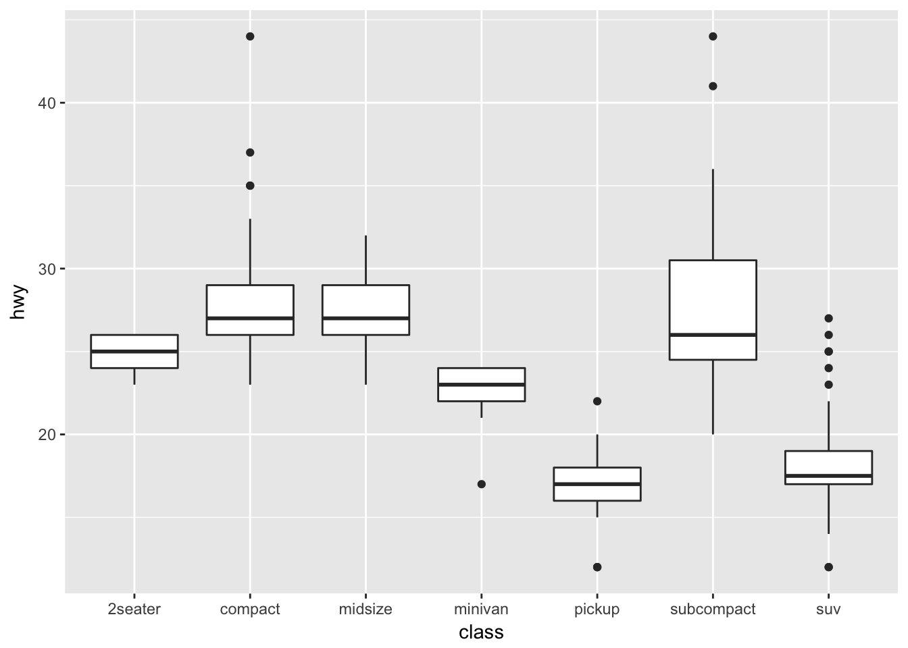
ggplot(data = mpg, mapping = aes(x = class, y = hwy)) + geom_boxplot() +
coord_flip()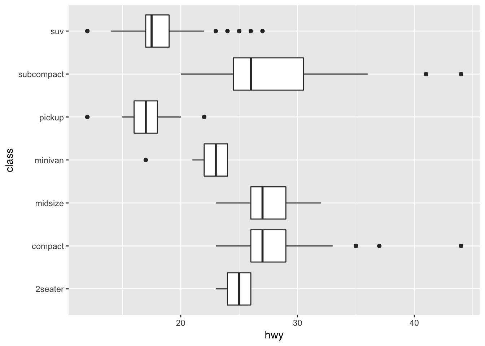
2.4.5 R Shiny
R Shiny enables us to produce interactive data visualizations with a minimum knowledge of HTML, CSS, or Java using a simple web application framework that runs under the R statistical platform (Castañón 2016). Standalone apps can be hosted on a webpage or embedded in R Markdown documents and dashboards can be built using R shiny. It combines the computational power of R with the interactivity of the modern web. The main advantage of using R Shiny is : Its flexibility of pulling in whatever package in R that you want to solve your problem, reaping the benefits of an open source ecosystem for R and JavaScript visualization libraries, thereby allowing to create highly custom applications and enabling timely, high quality interactive data experience without (or with much less) web development and without the limitations or cost of proprietary BI tools.
It combines the computational power of R with the interactivity of the modern web. The main advantages of using R Shiny are : Its flexibility of pulling in whatever package in R that you want to solve your problem, reaping the benefits of an open source ecosystem for R and JavaScript visualization libraries, thereby allowing to create highly custom applications and enabling timely, high quality interactive data experience without (or with much less) web development and without the limitations or cost of proprietary BI tools.
2.4.6 D3.js
D3.js stands for Data-Driven Document, a JS library for interactive Big Data visualization in literally ANY way required real-time(Cabot Technology Solution 2017). This is not a tool, mind you, so a user should have a solid understanding of JavaScript to work with the data and present it in a humanly-understandable form. To say more, this library renders the data into SVG and HTML5 formats, so older browsers like IE7 and 8 cannot leverage D3.js capabilities.
The data gathered from disparate sources like huge-scale datasets is bind in real-time with DOM to produce interactive animations ( 2D and 3D alike) in an extremely rapid way. The D3 architecture allows the users to intensively reuse the codes across a variety of add-ons and plug-ins. Some of the key advantages are: It is a dynamic, free and open source and very flexible with all web technologies, the ability to handle big data and the functional style allows to reuse the codes.
The Hitchhiker’ Guide to d3.js (Ian 2017) is a wonderful guide for self-teaching d3.js. This guide is meant to prepare readers mentally as well as give readers some fruitful directions to pursue. There is a lot to learn besides the d3.js API, both technical knowledge around web standards like HTML, SVG, CSS and JavaScript as well as communication concepts and data visualization principles. Chances are you know something about some of those things, so this guide will attempt to give you good starting points for the things you want to learn more about.
It starts from the insights of learning d3.js by showing interviews with those top visualization practitioners. Then the author gives key concepts and useful features for learning visualization like d3-shape, d3 selection, d3-collection, ds-hierarchy, ds-zoom as well as d3-force.
The guide is helpful as it lists a lot of useful resources links for learning d3.js. For example, it recommends d3 API Reference, 2000+ d3 case studies and tutorials for d3. It contributes tremendously in doing exploratory analysis version of group project of this class on d3. Further, the guide provides information such as some meetup groups in the bay area, which can be helpful in connecting with data professionals and building up networks.
2.4.7 Tableau
Tableau is amid the market leaders for the Big Data visualization, especially efficient for delivering interactive data visualization for the results derived from Big Data operations, deep learning algorithms and multiple types of AI-driven apps (AbsentData 2018).
Tableau can be integrated with Amazon AWS, MySQL, Hadoop, Teradata ,and SAP, making this solution a versatile tool for creating detailed graphs and intuitive data representation. This way the C-suite and middle-chain managers are able to make grounded decisions based on informative and easily-readable Tableau graphs.
Tableau is a business intelligence (BI) and analytics platform created for the purposes of helping people see, understand and make decisions with data. It is the industry leader in interactive data visualization tools, offering a broad range of maps, charts, graphs, and more graphical data presentations. It is a painless option when cost is not a concern and you do not need advanced and complex analysis. The application is very handy for quickly visualizing trends in data, connecting to a variety of data sources, and mapping cities/regions and their associated data.
Key advantages:
- It provides a non-technical user the ability to build complex reports and dashboard with zero coding skills.
- Using drag-n-drop functionalities of Tableau, user can create a very interactive visual within minutes.
- It can handle millions of rows of data with ease and users can make live to connections to different data sources like SQL etc (“Data Visualization Best Practices” 2017)(“The Extreme Presentation Method,” n.d.).
- It is possible to create new calculated fields within Tableau by using functions on existing fields
- A Tableau file can be saved with the data attached so that it does not need to remain on the same hard drive/cloud as the data.
- [Tableau Public]https://public.tableau.com/s/ is available to showcase work on a user profile online
2.4.7.1 Using Multiple Data Sources
In Tableau data source there are two ways to add in data from multiple sources. The first is joining the data, which will add two datasets together at the row level related by specific columns. When joining tables, the fields being joined must be of the same data type. There are four types of joins: inner, left, right and full outer. Note that when possible perform joins outside of Tableau and import one dataset in order to maximize performance.
The second is blending multiple data sources, which keeps two or more data sources separate from each other but displays the information together. Blending allows for data to have different levels of detail such as aggregate number of transactions per month vs. individual transactions. It also is used when joins will not work, such as having transactional data in one source and quota data in another. Blending requires at least one common field between both data sources. If the field names are different but the two columns contain the same values, the relationship can be defined by changing the column names in one data source to match the other, or defining the relationship manually (Technology mart 2017).
Steps For Joining Data- Connect the first data source (dragging the file wanted to the canvas if there are multiple options)
- Add another connection (there should be two overlapping circles on the canvas where the two datasets overlap)
- Click on the join relationship (the circles) to add a join type and data-match !(joins)[https://onlinehelp.tableau.com/current/pro/desktop/en-us/Img/joins_joindialogbox.png]
- Choose from the different types of joins and then which column in each dataset that will match (ie. the orderID column in both a sales dataset and a shipping dataset)
{kind=link}
- Add your first data source
- Go to Data > New Data Source
- Choose your second dataset
- Your primary data source (the first dataset used when dragging dimentions or measures in the sheet) should have a blue tick mark beside it
- Secondary data source will have an orange tick mark next to it.
- Tableau will try to automatically define the relationship between the two datasets using columns with the same names.
- Define the relationship manually by going to Data > Edit Relationships > Custom > Add a Relationship
Joins and Data Blending work when it is required to append columns from one table to another. During a situation where we need to add rows from one table to another, Union functionality can be used. For instance, when data is available in separate tables for different months; each table contains the same information but only for the relevant month. Now if it’s required to club these data, then in this case union functionality will be useful.
Steps for using Union- On the data source page, double-click New Union to set up the union.
- Drag a table from the left pane to the Union dialog box.
- Select another table from the left pane and drag it directly below the first table.
- Click Apply or OK to union
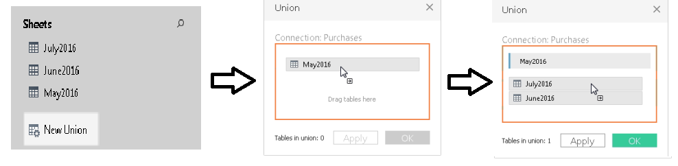 (“Union Your Data” 2019)
2.4.7.2 Getting Started by Creating a First View
(Tableau.com 2019)
The types of visualization will change for each dataset, but Tableau’s layout will be the same regardless, so it is important to know more about the main features for creating visual of your data.

| Element | Description |
|---|---|
| Data Pane | Displays the data set that is in the view and the fields (columns) in the data set that are automatically sorted into dimensions or measures (explained below). |
| Cards | Cards are containers for different controls available in Tableau. |
| Marks | This is a main way of manipulating visual aspects of graphs and charts. You can encode your data fields with elements like type, color, size, shape etc. You can have multiple measures and dimensions added to the marks cards to add different properties such as different regions denoted by shapes and quantity denoted by size. |
| Summary | The summary card is available on the show/hide cards toolbar menu to add summary statistics either for the data selection, or the entire data source. |
| Shelves | Shelves are a type of card. |
| Rows and Columns | Rows and columns are the shelves where you drop data fields in order to create the structure of your visualization. When creating a table visualization, the columns will create the columns of the table, while the rows would create the rows of the table. Any number of fields can be dragged onto the shelves to create a more granular picture of the data. When a dimension is placed on the shelf, headers for the member of the dimension are created. When a measure is placed on a shelf, the quantitative axes for the measure are created. |
| Filters | The filters shelf is where you specify the data to include and exclude by dragging measures, and/or dimensions. For example, you can put your date into the filter if you only want to see revenue from the last quarter, or you can put a categorical dimension into the filter if you only want to see data for specific products. |
| Pages | The pages shelf allows for a series of separate page views with a common axis to better analyze how a certain measure affects the rest of the data. When a field is added to the pages shelf a control panel is added to the right side of the view to move through the pages (either manually or automatically). |
| Measure Values | At the bottom of the measures data pane is a special field that contains all measures of the data collected into one field. |
| Calculation Type | Description |
|---|---|
| Dimension | Qualitative or categorical data that would normally appear as column headers for rows of data that normally defines the granularity that shows in the view, i.e. customer name or order date. |
| Measure | Quantitative or numerical data that can be aggregated based on a given dimension, i.e. total sales (measure) per region (dimension) |
2.4.7.3 Using Shapes as Filters in Tableau When Your Fields Are Measures
This article (Brett 2018) introduces the methodologies on how to use shapes as filters in Tableau when your fields are measures. It teaches you how to load custom shapes as action filters and use them for showing different graphs with those filters, which can make your visualization more interesting and interactive. You can also download the Tableau file for practice.
2.4.7.4 Creating Calculated Fields
(Tableau 2019a) On the Data Source tab of a Tableau file there will be the complete set of data imported that is available to use for your visualizations. This list also contains the opportunity to create new fields, based on those existing. "You can use calculated fields for many, many reasons. Some examples might include:- To segment data
- To convert the data type of a field, such as converting a string to a date.
- To aggregate data
- To filter results
- To calculate ratios"
(Tableau 2019a) These calculated fields can also be created in the visualization pages. This allows the user to combine fields for more robust vizualizations, without the need to create another field.
| Calculation Type | Description |
|---|---|
| Basic calculations | Basic calculations allow you to transform values or members at the data source level of detail (a row-level calculation) or at the visualization level of detail (an aggregate calculation). |
| Level of Detail (LOD) expressions | Just like basic calculations, LOD calculations allow you to compute values at the data source level and the visualization level. However, LOD calculations give you even more control on the level of granularity you want to compute. They can be performed at a more granular level (INCLUDE), a less granular level (EXCLUDE), or an entirely independent level (FIXED) with respect to the granularity of the visualization. |
| Table calculations | Table calculations allow you to transform values at the level of detail of the visualization only. (Tableau 2019a) |
- If/Then Statements and other logical functions
- Date Functions
- AVG, COUNT, MAX, MIN and other Aggregation functions
-
Functions involving simple math using two or more of the existing fields
2.4.7.5 Creating Groups
(Tableau 2019b) Creating a group in Tableau will combine items in a field that are related to each other in some way and allow you to visualize the new grouped data, while the old non-grouped data still remains. The paperclip icon in Tableau is used for grouping.
There are many ways to create groupings of data, and different reasons for grouping data in a certain way:-
Selecting multiple data points in the view and group them together using the group icon.
-
For example, you might want to do this with mislabeled data from input error. i.e. columns that are titled “CA” and “California” would be depicting the same data but would be graphed separately. We can combine these into a group and rename the group according the rest of the dataset’s naming convention for states.
-
Groups can be created from a field in the data pane by clicking on the field containing the data needing to be grouped and selecting create > group. Select the members of field you want to group and click group.
-
For example, you might want to do this to view smaller items in a larger aggregate grouping. i.e. If expenditure on office supplies were being graphed and we wanted to put all the small items like paperclips, pencils, pens, and sticky notes in an aggregate category called “small supplies”.
-
Creating an “other” group when making multiple grouped categories is useful for grouping all the remaining un-grouped members. This can be done by clicking on the grouped field, and selecting Edit Group, and selecting Include Other.
-
This can help highlight certain groups against everything else. For example, if the visualization is intended to show high performing products and low performing products, then creating an “other” group will help draw attention to the focus of the graph.

-
Coloring a view using groups helps to visually identify a group of related marks. You can select the marks directly by pressing and holding the Shift key to select multiple marks and click the paperclip (Group) button on the toolbar and select Group.
- It is possible that when creating groups this way, the marks will represent more than one dimension. You can choose to group on all dimensions or just a particular dimension.
-
This is useful for showing things like outliers, or highest performers.
-
Coloring a view using groups helps to visually identify a group of related marks. You can select the marks directly by pressing and holding the Shift key to select multiple marks and click the paperclip (Group) button on the toolbar and select Group.
-
This can help highlight certain groups against everything else. For example, if the visualization is intended to show high performing products and low performing products, then creating an “other” group will help draw attention to the focus of the graph.
-
Creating an “other” group when making multiple grouped categories is useful for grouping all the remaining un-grouped members. This can be done by clicking on the grouped field, and selecting Edit Group, and selecting Include Other.
-
For example, you might want to do this to view smaller items in a larger aggregate grouping. i.e. If expenditure on office supplies were being graphed and we wanted to put all the small items like paperclips, pencils, pens, and sticky notes in an aggregate category called “small supplies”.
-
Groups can be created from a field in the data pane by clicking on the field containing the data needing to be grouped and selecting create > group. Select the members of field you want to group and click group.
-
For example, you might want to do this with mislabeled data from input error. i.e. columns that are titled “CA” and “California” would be depicting the same data but would be graphed separately. We can combine these into a group and rename the group according the rest of the dataset’s naming convention for states.
2.4.8 TabPy
(Beran 2017)
Imagine a scenario where we can just enter some x values in a dashboard form, and the visualization would predict the y-variable! TabPy allows us to integrate and visualize data from Python in Tableau.
The author here has given an example in which he tries to identify criminal hotspots in the area using data from Seattle’s police department’s 911 calls. The author uses machine learning (spatial clustering) and creates a great interactive visualization which allows viewers to click on the type of criminal activity to show various clusters.
There are other examples and use cases that may be downloaded, and the scripts are also given by the author to anyone who is interested in replicating the visualizations.
2.4.9 Google chart
A free and powerful integration of all Google power. The tool is rendering the resulting charts to HTML5/SVG, so they are compatible with any browser. Support for VML ensures compatibility with older IE versions, and the charts can be ported to the latest releases of Android and iOS. What’s even more important, Google chart combines the data from multiple Google services like Google Maps. This results in producing interactive charts that absorb data real-time and can be controlled using an interactive dashboard (“Top 4 Big Data Visualization Tools” 2018).
2.5 Data Visualization in Business
Companies tend to rely on dashboards (a compilation of several related data visualizations) to give them high-level insights on company-wide, market-level, or employee-level performance. The following are some common applications of dashboards in business.
| Application | Description |
|---|---|
| Sales & Marketing | This is one of the most popular uses for dashboards. Companies like to regularly track their revenue, conversions, lead sources, etc. and rely on data visualization to synthesize these large and constantly updated data into visual summaries.Funnel reporting in terms of sales velocity and efficiency, Camparing ROI, distribution of opportunities and leads across region, time, etc are some of the matrices which requires dashboards and visualization on latest as well as historic data. Sales and Marketing teams are one of the major consumers of BI tools driven reporting and monitoring dashboards. |
| Customer Success | These dashboards can be created by the team, but are also often built into customer service platforms such as Zendesk. They include various KPIs of the customer success team, such as the ratio of tickets open to tickets closed and time to resolution. |
| Product Management | These dashboards tend to synthesize sales, marketing, and customer research data together and are typically used for executive reporting. The visuals display metrics such as dollars and hours devoted to various projects and most requested features by customers. |
| Clinical Performance Management | Data visualizations are also helpful in the healthcare industry to monitor healthcare systems operations, clinical performance monitoring and patient profiling. Healthcare provider organizations (hospitals and health systems) can better examine their clinical, administrative and financial data to support clinical costing and resource coordination, better-planned care for patients and provide competitive advantage alongside maintaining quality standards. |
| Finance | Finance is another popular domain where dashboards help cover a variety of aspects such as- profit & loss, cash flow management, revenue, profit margin, cost heads etc. Finance dashboards can often be helpful in identifying trends on revenue, profitability, cash flows, accounts payable, day sales outstanding and so on. A key area to leverage finance dashboards is identifying performance of key metrics over a period of time and creating and comparing performance against internal (and/or external) benchmarks. There is no dearth of data that can flow into a financial dashboard! |
| Human Resources | Human resource is another critical functional domain where dashboards and reporting play a key role. HR and People Analysts are actively hired across organizations for measuring employee productivity, attrition or turnover rates, understanding training costs per employee, recruiting conversion rate, average employee retention period, cost per hire and so on. Human resource can constitute one of the major cost heads for most service companies and hence drives the need for HR management and reporting. |
2.5.1 Data Visualizations in Industry
2.5.1.1 Healthcare
Data visualization is also used across many different industries. One popular area right now is healthcare, especially involving big data. The benefits and uses of interactive data viz are detailed in a paper from the University of Maryland (2013). (Schneiderman 2013)
The paper highlights three types of data that can and should be visualized to help in decision-making: personal, clinical, and public health information. Examples include: exploration of prescription patterns of different drugs and tracking personal health and fitness statistics. (Even the nice, clean Fitbit app home screen is a comprehensive dashboard!) Importantly, making sense of all this data collected from individuals will help healthcare organizations and companies provide more personalized and effective health treatment.
With data volumes increasing exponentially, health care can no longer rely on antiquated data presentation tools like spreadsheets and tables any more than modern computers can still use transistors. Spreadsheets and tables are outdated means of data-sharing which are time-consuming to produce and ineffective to consume, particularly with large amounts of data. (“A Healthcare Data Revolution – the Case for Data Visualization” 2019)
According to AHIMA (American Health Information Management Association), the healthcare industry is in the midst of a data revolution, storing more information than ever before. Healthcare data volumes are increasing at a 49% clip annually, according to a recent report in CIO Magazine.
Many organizations produce data visualizations in the areas of healthcare delivery, patient-facing applications, population health, public health, or global health. Some examples include: * The Institute for Health Metrics and Evaluation, a population health research center at UW Medicine, regularly features data visualization on its site regarding topics such as the social determinants of health and obesity. * Visualizing Health is a project of the Robert Wood Johnson Foundation and the University of Michigan Center for Health Communications Research that provides visualizations that communicate healthcare risk information. * The Center for Disease Control’s National Center for Health Statistics offers a data visualization gallery based on the data the organization collects. * The Agency for Healthcare Research and Quality (AHRQ) offers a data visualization site that highlights findings from the Agency’s Medical Expenditure Panel Survey, the Healthcare Cost and Utilization Project, and other AHRQ data sources. (“The Rise of Healthcare Data Visualization” 2017)
2.5.1.2 Media and Entertainment
The Data Visualization & Analytics trend has impacted all industries, including the media industry. As new technologies are being developed to automate and simplify the process of data analysis, and as throngs of data analysts are being trained and hired to meet the demand for the analysis of these data. For newspapers, television, magazines and Internet-only publishers, Data Visualization & Analytics strategies can include audience analytics to enable a better understanding and targeting of customers; tools to understand public and private databases for journalistic storytelling; tools to manage and search the exploding amount of video, social media and other content; tools to target advertising and ad campaigns; tools to automate the production of text and video stories, tools to identify waste and enable efficiency; and much more. (“Data Visualization and Analytics Transforming Media Industry” 2017)
There are several ways in which media and entertainment companies can benefit from visualization and analytics applications such as: * Audience Interest Analysis: Viewing history, searches, reviews, ratings, location and device data, click streams, log files and social media sentiment are just a few data sources that help take the guess work out of identifying audience interest. * Enhanced Program Scheduling: With the help of insights gained through data visualization and analytics, the entertainment companies are able to understand when customers are most likely to view content and what device they’ll be using when they view it. Benefiting from the scalability of visualization and analytics solutions, this information can be analyzed at a granular ZIP code level for localized distribution. * Increasing Acquisition and Retention: Smart data visualization and analytics tools may help media and entertainment companies in understanding why consumers subscribe and unsubscribe, which will allow them develop the best promotional and product strategies to attract and retain customers. Unstructured data visualization and analytics sources best handled by data visualization and analytics applications such as call detail records, email and social media sentiment reveal often overlooked factors driving customer interest and churn. (“Big Data in Media and Entertainment,” n.d.)
2.5.2 How visualization impacts Industry/business
(Lazarevich 2018b) According to an Experian report, 95% of U.S. organizations say that they use data to power business opportunities, and another 84 percent believe data is an integral part of forming a business strategy. Visualization helps data impact business in following ways:
2.5.2.1 Cleaning
The simplest way to explain the importance of visualization is to look at visualization as a means of making sense of data. Even the most basic, widely-used data visualization tools that combine simple pie charts and bar graphs help people comprehend large amounts of information fast and easily, compared to paper reports and spreadsheets.
In other words, visualization is the initial filter for the quality of data streams. Combining data from various sources, visualization tools perform preliminary standardization, shape data in a unified way and create easy-to-verify visual objects. As a result, these tools become indispensable for data cleansing and vetting and help companies prepare quality assets to derive valuable insights. Data cleansing is typically done by using instance reduction techniques.
Instance reduction: It helps to reduce the size of the data set without compromising the quality of insights that can be extracted from the data. It removes instances and generates new ones to make the data set compact. There are two major instance reduction algorithms:
Instance selection: It is used to identify the best examples from a very large dataset with many instances in order to curate them as the input for the analytics system. It aims to select a subset of the data that can act as a replacement for the original dataset while completely fulfilling the goal. It will also remove redundant instances and noise.
Instance generation: It involves replacing the original data with artificially generated data in order to fill regions in the domain of an issue with no representative examples in the master data. A common approach is to relabel examples that appear to belong to wrong class labels. Instance generation thus makes the data clean and ready for the analysis algorithm.
Tools you can use: Drake, DataWrangler, OpenRefine
2.5.2.2 Extraction
Known versatile tools for data visualization and analytics like Elastic Stack, Tableau, Highcharts, and more complex database solutions like Hadoop, Amazon AWS,and Teradata, have wide applications in business, from monitoring performance to improving customer experience on mobile tools. The new generation of data visualization based on AR and VR technology, however, provides formerly unfeasible advantages in terms of identifying patterns and drawing insights from various data streams.
Building 3D data visualization spaces, companies can create an intuitive environment that helps data scientists grasp and analyze more data streams at the same time, observe data points from multiple dimensions, identify previously unavailable dependencies and manipulate data by naturally moving objects, zooming, and focusing on more granulated areas. Moreover, these tools allow us to expand the capabilities of data visualization by creating collaborative 3D environments for teams. As a result, new technology helps extract more valuable insights from the same volume of data.
Data has shown phenomenal growth over the past decade and its widespread application by businesses as a growth catalyst continues to deliver positive results. The scale of data is massive and the volume, velocity, and variety of data call for more efficient processing to make it machine-ready. Although there is a multitude of ways to extract data such as public APIs, custom web scraping services, internal data sources, etc., there would always remain the need to do some pre-processing to make the data perfectly suitable for business applications.
Data pre-processing techniques that play a key role in the process are :
- Data cleansing
- Data Manipulation
- Data normalization
- Data Transformation
- Missing values imputation
- Noise identification
- Minimizing the pre-processing tasks
2.5.2.3 Strategizing
As the amount of data grows, it becomes harder to catch up with it. Therefore, data strategy becomes the necessary part of the success in applying data to businesses. Then how data visualization become an important tool in your strategic kit?
The use of dashboards to present business statistics in a graphical manner charts, tables, and graphs helps the stakeholders keep track of the key indicators of the business and to focus on the areas that need to be improved. Building the dashboard application to impact a better decision-making process is the important aspect of business intelligence. It is observed that the higher adoption of latest technologies in business is resulting in higher return on investment and the low adoption causes the loss in the business.
According to Aberdeen Group, managers who utilize data visualizations are 28 percent more likely to find relevant information compared with those who use managed dashboards and reporting tools.They also discovered that 48 percent of those who use data visualizations are able to find the information they want without the help of tech support. Data Informed provides an excellent example of this on their blog: Business leaders for a supermarket chain can use data visualization to see that not only are customers spending more in its stores as macro-economic conditions improve, but they are increasingly interested in purchasing ready-made foods.(import.io, n.d.)
2.5.3 Corporate Scorecards and Data Visualization
Corporate transparency, flat organizations, open book policies, etc. are terms executives and entrepreneurs learn about all the time (Boost Labs 2015). As the corporate world shifts towards a more open culture, the demand for open data and insights have increased dramatically. This shift has helped the overall corporate strategic planning and management process easing the alignment of business activities towards a series of goals. Being transparent top down aligns the culture to sail towards the same North Star.
The growth of corporate transparency is not only important internally, but externally as well. Corporate certifications like B Corporations certifications (B Corp), require companies to provide a transparent view of their social conscious efforts to the general public. Achieving the certification is one step of the process; the true goal is to show the world how and why the certification is truly deserved.
Here’s the process on how to get it done.
| Step | Name | Description |
|---|---|---|
| 1 | Perform Data Discovery and Determine the Story | Before this step it is easy to underestimate the effort level it takes to pull the best insights from the data. Data manipulation products like Tableau, Domo, Pentaho, IBM’s Many Eyes, and R, among others, make insight extraction that much easier to gain understanding of data using a visual medium. The key is to start with a simple portion of your data and to start pulling basic insights to visualize and correlate with each other. This process leads towards a compound series of questions, which helps provide an overall vision to the end product. We see the effect during our discovery process, which leads to unforeseen avenues for data intelligence. |
| 2 | Data Infrastructure Setup | Data infrastructures can be simple or complex depending what the end goal is. Many clients prefer to go the route of complete data integration in order to centralize their data repositories. Technologies such as Hadoop have helped by unifying disparate data sources, but other options such as data cloud environments can help produce API’s for future product deployments. Why is this important? Accessibility of data is an important foundation not only within the context of dashboards, but also the possibility of branching out to other products. |
| 3 | Product Design & Development | Wireframing, prototyping, and application development are the main engines to transform an idea into a final product. Products can range from static presentations/reports to full interactive applications. Mobile, tablet, TV, and workstation platforms can all be mediums to help deliver the final product. The secret to a great end product is how well the data story is conceptualized. If the story is weak then the end product will also suffer. |
| 4 | QA & Product Release | The best part of any project is to get it finalized and released for all to see. All data gets verified for accuracy, functionality testing (if applicable), application flow (if applicable), design testing, and remaining items are all completed. The end result is an engaging visual product for all intended audiences to see and use. |
2.5.4 Demand for Data Literacy
The demand for data literacy is at an all-time high. Originally, data science was focused on the finance and tech industries but the demand for data science skills is increasing for every industrial section. ([Lifeline)(https://lifelinedatacenters.com/data-center/business-intelligence/))
Businesses generate more data everyday with what knowing the robust use cases are. Forbes states that a big hinderance which slows business progress is poor data literacy. Employers are now training their employess on data skills with the advantage of already knowing the business. But the demand still persists and this article states that automation is a key factor that can affect all of the sectors in section 3.5.1 but not enough employees have that toolset. (Forbes)
The end message is clean; no matter what industry or title you may have, adding skills related to data as mentioned in previous sections can truly increase business efficiencies.
2.6 Special Topics
2.6.1 Data Mining and Data Visualization
According to a paper in 2018(EDUCBA 2018), there are some key differences between data mining and data visualizations as suggested below:
Data Mining involves different processes such as data extraction, data management, data transformations, data pre-processing, etc.
Data Visualization, the primary goal is to convey the information efficiently and clearly without any deviations or complexities in the form of statistical graphs, information graphs, and plots.
The author has also listed top 7 comparisons between data mining and data visualization, and 12 key differences between them. The article provides a very clear understanding of each of these techniques.
| BASIS FOR COMPARISON | Data Mining | Data Visualization |
|---|---|---|
| Definition | Searches and produces a suitable result from large data chunks | Gives a simple overview of complex data |
| Preference | This has different applications and is preferred for web search engines | Preferred for data forecasting and predictions |
| Area | Comes under data science | Comes under the area of data science |
| Platform | Operated with web software systems or applications | Supports and works better in complex data analyses and applications |
| Generality | New technology but underdeveloped | More useful in real time data forecasting |
| Algorithm | Many algorithms exist in using data mining | No need of using any algorithms |
| Integration | Runs on any web-enabled platform or with any applications | Irrespective of hardware or software, it provides visual information |
2.7 Implications of Good Data Visualization
Raw data is often meaningless or at the very least is difficult to derive immediate meaning from. When people face a broad set of measurements and/or in large quantities, they are unable or unwilling to spend the time required to process it. Technological advances of the Digital Age contribute to an ever-growing pool of “big data” and have dramatically improved our ability to collect such large amounts of information. Thus, filtering, visualization, and interpretation of data becomes increasingly important.
We should understand how to best derive meaning from data, but first we should understand why its presentation in graphical format is so powerful. Furthermore, while the ideal purpose of data visualization is to facilitate understanding of data, visualization can also be used to mislead. Some of the main methods of doing so are omitting baselines, axis manipulation, omitting data, and ignoring graphing convention. Examples of these methods will be explored later in this chapter.
| SNo. | Principle | Description |
|---|---|---|
| 1. | Easy Recall | People can process and remember images quicker than words. When data is transformed into images, the readability and cognition of the content greatly improves. |
| 2. | Providing Window for Perspective | With infographics, you can pack a lot of information into a small space. Colors, shape, movement, the contrast in scale and weight, and even sound can be used to denote different aspects of the data allowing for multi-layered understanding (Mullis 2015). |
| 3. | Enable Qualitative Analysis | Color, shape, sounds, and size can make evident relationships within data very intuitive. When data points are represented as images or components of an entire scene, readers are able to see the correlation and analytical insights can be easily derived. |
| 4. | Increase in User Participation | Interactive infographics can substantially increase the amount of time someone will spend with the content and the degree to which they participate in the information, both in its collection and its dissemination. |
2.7.1 Typography and Data Visualization
Typography is the art and technique of arranging type to make written language legible, readable and appealing when displayed. (WIKI)
The arrangement of type involves selecting typefaces, point sizes, line lengths, line-spacing (leading), and letter-spacing (tracking), and adjusting the space between pairs of letters.
2.7.1.1 Preattentive visual attributes and typography
While data components such as quantitative or categorical data are commonly represented by visual features like colors, sizes or shapes, utilization of boldface, font variation, other typographic elements in data visualization are less prevalent.
Preattentive attributes are those that perceptual psychologists have determined to be easily recognized by the human brain irrespective of how many items are displayed. Therefore, “preattentive visual attributes are desirable in data visualization as they can demand attention only when a target is present, can be difficult to ignore, and are virtually unaffected by load.” Examples of preattentive attributes are size/area, hue, and curvature.
This brings us to the disparate situation of the popularity of visual aspects like color and size and typographic aspects such as font variation, capitalization and bold. The authors present several possible reasons for this, beginning with the preattentiveness of visual attributes like size and hue. However, some typographic attributes such as line width or size, intensity, or font weight (a combination of the two) are considered preattentive as well.
Furthermore, these visual attributes are inherently more viscerally powerful, and they are easy to code in a variety of programming languages. Technology has also perhaps previously limited the use of typographic attributes, for only recently have fine details such as serifs, italics, etc. been made readily visible to the audiences of data visualizations by technological advances.
Benefits of Using Preattentive Attributes
(Hepworth 2015)
There are many benefits to using preattentive attributes in your visualization, mainly that it helps direct your audience’s attention to where you want them to focus it. It can also be used to create a visual hierarchy of elements to lead your audience through the information you want to communicate in the way you want them to process it.
By understanding how our audience sees and processes information, we put ourselves in a better position to be able to communicate effectively.
Seeing it in Action
Here are some examples of preattentive attributes in action.
The correct answer is six. In the above figure, there were no visual cues to help you in concluding your answer. Thus making it a challenging exercise, where you scan through the four lines of text, looking for the number 3 to count their occurances.
Now let’s see what happens when we make a slight change to the block of numbers, by adding colours to it.
Repeat the above exercise of counting the number of 3s using the below figure.Note how much easier and faster the same exercise when we added the colour to the number 3. Even without blinking or thinking, all six 3s become very obvious and cannot be missed. This is because in this second iteration, your iconic memory is being leveraged. The preattentive attribute of intensity of color, in this case, makes the 3s the one thing that stands out as distinct from the rest. Our brain picks up on this without us having to dedicate any conscious thought to it.
This is remarkable. And profoundly powerful. What this means for us is that, if we use preattentive attributes strategically, they can help us enable our audience to see what we want them to see before they even know they’re seeing it! (Hepworth 2015)
Aside from colour, we can also use movement to call the audience’s attention to the point of focus in a visualization. Movement has two sub-attributes - flicker and motion. While both can be used very effectively to call someone’s attention, we should use it with caution in information visualizations, as the audience may find the motion annoying or distracting from the rest of the information that is being presented. Movement is most commonly used in banner adverts and other forms of web advertising and may be a primary reason for the rise of ad-blocking software today.
Shading, or colour tints, can also be used to direct the reader’s attention by increasing darkness on elements we do not want the reader to be focusing on. On the contrary, we increase the brightness/contrast on the element we want the reader to focus on.

Source: https://www.interaction-design.org/literature/article/preattentive-visual-properties-and-how-to-use-them-in-information-visualization
Author/Copyright holder: P.Ctnt. Copyright terms and licence: Public Domain.
2.7.1.2 Why typography is not currently popular in data visualizations
The authors remark that it is possible the lack of variety of typographic elements used in data visualizations is due to the limited knowledge of computer scientists and other individuals pursuing data visualization in how to apply these elements effectively. While the first few proposed explanations make sense from personal experience with technology and exposure to data visualizations and design in general, the hypothesis that lack of knowledge of typographic elements in data visualization seems more plausible if it was being applied to a small group of people rather than all of the data visualization design community. It is more likely that the use of typographic elements in data visualization is less popular because there are fewer instances in which it can be used appropriately, or a status quo bias if current visual attributes are received well, the prevailing attitude may be not to fix what is not broken. However, the authors also point out that despite the dearth of typographic attributes in data visualization, other spheres like cartography, mathematics, chemistry, and programming have a rich history with type and font attributes that informs the scope of the parameter space?
2.7.1.3 Tips for using typographic attributes in visualizations
The authors continue by pointing out some tips for using typographic attributes to encode different data types, since certain attributes may be suited to particular purposes. For example, font weight (size and intensity) is ideal for representing quantitative or ordered data, and font type (shape) is better suited to denote categories in the data.
Furthermore, as in typography and cartography, use of typographic attributes in data visualization raises concerns of legibility and the ability to read lines and blocks of words. Often, interactivity of a visualization will not only improve functionality, but also provide a solution to readability issues by providing a means to zoom in on small text.
There are a few examples of unusual/innovative use of typography for data visualization in the article, not all of which we agree are made more effective by the interesting utilization of typographic attributes, but the “Who Survived the Titanic” visualization’s use of typographic attributes allowed it to not only answer macro-questions very quickly, such as if women and children were actually first to be evacuated across classes, but also to provide answers to micro-questions, like whether or not the Astors survived. It used common visual elements like color and area to indicate whether or not a person survived and number/proportion of people, as well as typographic aspects like italic and simple text replacement to indicate gender and the passengers’ names.

2.7.1.4 Criticisms of typography
The authors round out the article by addressing the most common criticisms of typography in data visualization, the foremost one being whether or not text should even be considered an element of data visualization, since visualization connotes preattentive visual encoding of information, and text or sequential information necessitates more investment of attention to understand.
Another criticism is that textual representations are not as visually appealing even when used effectively. However, the authors counter that “this criticism indicates both the strength and weakness of type” that while text may not be suited for adding style or drama to a visualization, it can be particularly powerful in situations where a finer level of detail is needed, without sacrificing representation of higher-level patterns.
Lastly, a label length problem is common when using text in visualizations; differing lengths of names or labels may skew perception so that longer labels seem more important than shorter labels. This problem was encountered in the Titanic visualization with the varying lengths representations of passengers’ names and was corrected by only including a given name and a surname, the length of which could only vary so much.
2.7.2 Infographics vs. Data Visualizations
Data visualization and infographics both present visual information to users. While their purposes may seem similar, they have different use cases. This article explains the differences between an infographic and a data visualization. (Pritchard 2016).
2.7.2.1 Data Visualization
Data visualization usually involves the presentation of summary statistics using visual forms such as graphs, plots or charts; its goal is to provide clear and succinct information about your research. Data visualization also typically focuses on the two critical aspects of data and design. However, a design should depend on the data itself; for example, the type of chart used in a data visualization should be selected based on which one best displays the particular data set. Since visualizations are essential in telling stories (such as trends), it should avoid adding extraneous and distracting details. Data visualizations should be self-explanatory, and users should be able to conclude on their own.
2.7.2.2 Infographics
An infographic, on the other hand, is typically a combination of illustrations, facts, and text. Infographics might include some components characteristic of data visualization but in general feature less data-driven storytelling. While infographics are not grounded in data, like data visualizations, infographics convey several ideas simultaneously; and like data visualization, the design should be both visually appealing and should base in the function of conveying the visual story.
2.7.2.3 Comparison
| Data Visualization | Infographics |
|---|---|
| Illustrates raw values | Visualize stories |
| Delivers information | Provide stances |
| Offers objectivity | Offer subjectivity |
2.7.2.4 When Should You Use Infographics or Data Visualization?
While both infographics and data visualizations have their distinct use cases, more often than not they can be used together. Some of the effective ways to choose between them are described below.
Data Visualization:
| Use Case | Best Visual Representation | Rationale |
|---|---|---|
| Newsletters | Data Visualization | Newsletters have to catch the interest of viewers. Putting good data visualizations in newsletters makes them more interesting, and includes informative details such as a company’s unique findings, statistics, or status. |
| White papers & eBooks | Data Visualization | Including data visualizations can help support the argument you make in the document. |
| Annual Reports | Data Visualization | Things like an overview of past year, success stories, and company performance can be done well using data visualization. |
| Blog Posts | Infographic | Blog posts are generally written for a specific purpose. Including infographics can reinforce the point you are trying to make. |
| Case Studies | Infographic | Paired with a case study, an infographic can provide engaging visuals and succinctly summarize a lengthy report, offering valuable insights to readers. |
| Marketing Content | Infographic | Marketing content generally tells a story. The best way to tell a story is using proper infographics. These can be great for social media campaigns since infographics can display all the main points. |
2.7.3 Developing a Data Visualization Style
Type in ‘economics chart’ on your favorite web search engine and you might come across this chart:
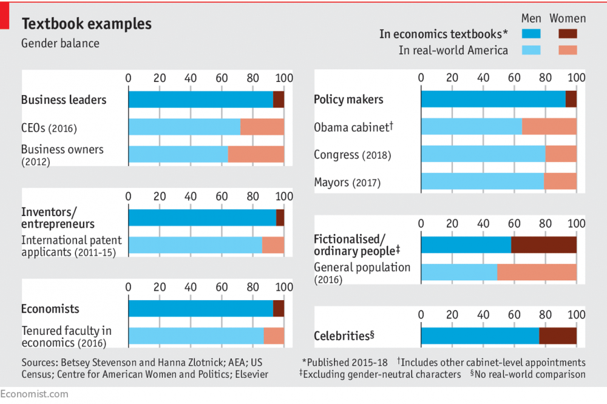
If you’re familiar with business news and publications, you might quickly recognize that this chart likely came from the famed economics publication, The Economist. Perhaps it was the light grey background, the short and attention-grabbing title, sparing use of colors, or even use of the tiny red bar at the top-left corner of the chart that told you this was from the The Economist. Search again for ‘The Economist charts’ and you’ll notice that all of their published charts look consistent and carry an identical brand. That is because The Economist charts conform to a style unique to the magazine.
[This guide](Lab 2017) by the Trafford Design Lab makes a compelling argument for organizations to develop style guides when creating visualizations to ensure consistent and high quality charts are produced. Style guides might make users conform to certain typefaces (fonts) or color palettes, but can also include best practices for data visualizations.
2.7.4 Handbooks to improve your visualization design
How do we turn findings from a dense spreadsheet into something that really makes our point? Good information design is the key. There are many free handy ebooks that offer guidance. The ones listed below might not relate to data viz directly, but can guide us in designing better visualizations.
- Design’s Iron Fist by Jarrod Drysdale (Drysdale 2016)
The free ebook, Design’s Iron Fist, is a collection of Drysdale’s previous work all wrapped up in one neat little package. Aside from practical tutorials and processes, this book also offers help on how to get into the mindset of being a truly great designer.
- The Creative Aid Handbook by Koo Roo (Roo 2013)
Creativity doesn’t just happen overnight. It’s something that each and every designer has to work at on a day-to-day basis. If you find that your innovative juices are running dry, The Creative Aid Handbook could be the answer. The helpful guide looks at how you can boost your intellect, foster your well-being, and, most importantly, become more creative.
- Designbetter.co by InVision (Invision 2018)
InVision released three fantastic design books that are available for free. Each book discusses various aspects of design like design process, management, and business. Moreover, some of the materials are available in audio format.
- Type Classification (“Type Classification Handbook” 2008)
Type Classification is a helpful beginner’s guide to typography. It provides the foundations of typography and covers a history of each of the type forms.
2.8 Contemporary Research Results & What’s Next
With the development, studies and new tools applied in data visualization, more people understand it matters. But given its youth and interdisciplinary nature, research methods and training in the field of data visualization are still developing. So, we asked ourselves: what steps might help accelerate the development of the field? Based on a group brainstorm and discussion, this article shares some of the proposals of ongoing discussion and experiment with new approaches (UW Interactive Data Lab 2015):
| New Approach | Description |
|---|---|
| Adapting Publication and Review Process | As the article states, “both ‘good’ and ‘bad’ reviews could serve as valuable guides,” so providing reviewer guidelines could be helpful for fledgling practitioners in the field. |
| Promoting Discussion and Accretion | Discussion of research papers actively occurs at conferences, on social media, and within research groups. Much of this discussion is either ephemeral or non-public. So ongoing discussion might explicitly transition to the online forum. |
| Research Methods Training | Developing a core curriculum for data visualization research might help both cases, guiding students and instructors alike. For example, recognizing that empirical methods were critical to multiple areas of computer science, Stanford CS faculty organized a new course on designing Computer Science Experiments (Klemmer and Levis 2011). Also, online resources could be reinforced with a catalog of learning resources, ranging from tutorials and self-guided study to online courses. Useful examples include Jake Wobbrock’s Practical Statistics for HCI and Pierre Dragicevic’s resources for reforming statistical practice. |
(Tufte 1986) (“Principles of Data Visualization - What We See in a Visual,” n.d.)
References
Koshy, Jacob. 2018. “8 Design Principles for Effective Data Visualization.” https://www.promptcloud.com/blog/design-principles-for-effective-data-visualization/.
Anderson, Melissa. 2017. “Data Visualization and the 9 Fundamental Design Principles.” https://www.idashboards.com/blog/2017/07/26/data-visualization-and-the-9-fundamental-design-principles/.
FusionCharts. 2012. “Principles of Data Visualization.” https://www.fusioncharts.com/whitepapers/downloads/Principles-of-Data-Visualization.pdf.
Tufte, Edward R. 1986. The Visual Display of Quantitative Information. Cheshire, CT, USA: Graphics Press.
Plotly. 2017. “Maximizing the Data-Ink Ratio in Dashboards and Slide Decks.” https://medium.com/@plotlygraphs/maximizing-the-data-ink-ratio-in-dashboards-and-slide-deck-7887f7c1fab.
gallery, The python graph. n.d. “Scatter Plot.” https://python-graph-gallery.com/scatter-plot/.
Periscope. 2018. “US Gun death in 2010 and 2013.” https://guns.periscopic.com/?year=2013.
Jonathan Gray, Liliana Bounegru, and Lucy Chambers. 2012. “Using Data Visualization to Find Insights in Data.” In Data Journalism Handbook, edited by Liliana Bounegru Jonathan Gray and Lucy Chambers. https://datajournalismhandbook.org/1.0/en/understanding_data_7.html.
Jim Stikeleather. 2013. “How to Tell a Story with Data.” http://hbr.org/2013/04/how-to-tell-a-story-with-data/.
“Time Series Chart Using Line.” n.d. https://www.google.com/search?q=time+series+chart+example&rlz=1C1EKKP_enUS814US814&source=lnms&tbm=isch&sa=X&ved=0ahUKEwj5zdOXv_vhAhWWsJ4KHYVfBeUQ_AUIDigB&biw=1422&bih=688#imgrc=FVLv-Sr4boq_2M:
“Time Series Chart Using Bar.” n.d. https://plot.ly/~louism/11.embed.
“Motion Chart.” n.d. https://excelcharts.com/animation-interaction-and-dynamic-excel-charts/.
“Sparkline Chart.” n.d. https://en.wikipedia.org/wiki/Dow_Jones_Industrial_Average#/media/File:DJIA_Trading_Volume.png.
{kind=link}
“Scatter Chart.” n.d. https://mathbitsnotebook.com/Algebra1/StatisticsReg/ST2ScatterPlot.html.
Andres. 2014. “Visually Representing Correlations.” https://fathom.info/notebook/6246/.
Gulbis, Janis. 2016. “Data Visualization – How to Pick the Right Chart Type?” https://eazybi.com/blog/data_visualization_and_chart_types/.
Plapinger, Thomas. 2017. “Visualizing Your Exploratory Data Analysis.” https://towardsdatascience.com/visualizing-your-exploratory-data-analysis-d2d6c2e3b30e.
Strachnyi, Kate. 2018. “The Ultimate Cheat Sheet on Tableau Charts.” https://towardsdatascience.com/the-ultimate-cheat-sheet-on-tableau-charts-642bca94dde5.
Yau, Nathan. 2018. “How to Make Square Pie Charts in R.” https://flowingdata.com/2016/07/18/how-to-make-square-pie-charts-in-r/.
Software, Tableau. 2019. “Visual Analysis Best Practices, Simple Techniques for Making Every Data Visualization Useful and Beautiful.” http://www.dataplusscience.com/files/visual-analysis-guidebook.pdf.
Taylor, Jonathan. 2018. “3 Simple Rules for Intuitive Dashboard Design.” https://www.klipfolio.com/blog/intuitive-dashboard-design.
tableau. n.d. “Top 5 Best Practices for Creating Effective Dashboards and the 7 Mistakes You Don’t Want to Make.” https://www.tableau.com/sites/default/files/whitepapers/dashboards-for-financial-services.pdf.
Few, Stephen. 2007. “Dashboard Confusion Revisited.” https://www.perceptualedge.com/articles/visual_business_intelligence/dboard_confusion_revisited.pdf.
Lebied, Mona. 2017. “An Introduction to Data Dashboards.” https://www.datapine.com/blog/data-dashboards-definition-examples-templates/.
Kerschberg, Ben. 2014. “Five Key Properties of Interactive Data Visualization.” https://www.forbes.com/sites/benkerschberg/2014/04/30/five-key-properties-of-interactive-data-visualization/#62266961589e.
Bierly, Melissa. 2016. “10 Useful Python Data Visualization Libraries for Any Discipline.” https://mode.com/blog/python-data-visualization-libraries.
Grolemund, Garrett, and Hadley Wickham. 2017. “R for Data Science.” Book. http://r4ds.had.co.nz/data-visualisation.html.
Castañón, Jorge. 2016. “Shiny: a data scientist’s best friend.” https://medium.com/ibm-data-science-experience/shiny-a-data-scientists-best-friend-883274c9d047.
Cabot Technology Solution. 2017. “D3.js: the Best Dynamic Platform to Create Mind-Blowing Data Visualizations.” https://www.cabotsolutions.com/2017/05/d3-js-the-best-dynamic-platform-to-create-mind-blowing-data-visualizations.
Ian, Johnson. 2017. “The Hitchhiker’s Guide to D3.js.” https://medium.com/@enjalot/the-hitchhikers-guide-to-d3-js-a8552174733a.
AbsentData. 2018. “Advantages and Disadvantages of Tableau.” https://www.absentdata.com/advantages-and-disadvantages-of-tableau.
“Data Visualization Best Practices.” 2017. Blog. http://paristech.com/blog/data-visualization-best-practices/.
“The Extreme Presentation Method.” n.d. Blog. http://extremepresentation.typepad.com/blog/2015/01/announcing-the-slide-chooser.html.
Tableau. 2019c. “Tableau Desktop and Web Authoring Help.” Website. https://onlinehelp.tableau.com/current/pro/desktop/en-us/multiple_connections.htm.
Technology mart. 2017. “Data Blending in Tableau.” Website. https://www.youtube.com/watch?v=dZKgIA6Pe_c.
“Union Your Data.” 2019. Tableau Article. https://onlinehelp.tableau.com/current/pro/desktop/en-us/union.htm.
Tableau.com. 2019. “Shelves and Cards Reference.” https://onlinehelp.tableau.com/current/pro/desktop/en-us/buildmanual_shelves.htm.
Brett, Lucie. 2018. “Using Shapes as Filters in Tableau When Your Fields Are Measures.” https://interworks.com/using-shapes-as-filters-in-tableau-when-your-fields-are-measures/.
Tableau. 2019a. “Get Started with Calculations in Tableau.” https://onlinehelp.tableau.com/current/pro/desktop/en-us/calculations_calculatedfields_create.htm.
Tableau. 2019b. “Group Your Data.” https://onlinehelp.tableau.com/current/pro/desktop/en-us/sortgroup_groups_creating.htm.
Beran, Boran. 2017. “Building advanced analytics applications with TabPy.” https://www.tableau.com/about/blog/2017/1/building-advanced-analytics-applications-tabpy-64916.
“Top 4 Big Data Visualization Tools.” 2018. Web Article. https://towardsdatascience.com/top-4-popular-big-data-visualization-tools-4ee945fe207d.
Schneiderman, Ben. 2013. “Improving Health and Healthcare with Interactive Visualization Methods.” http://www.cs.umd.edu/hcil/trs/2013-01/2013-01.pdf.
“A Healthcare Data Revolution – the Case for Data Visualization.” 2019. http://www.healthcarebusinesstech.com/healthcare-data-visualization/.
“The Rise of Healthcare Data Visualization.” 2017. https://journal.ahima.org/2017/12/21/the-rise-of-healthcare-data-visualization/.
“Data Visualization and Analytics Transforming Media Industry.” 2017. https://visualrsoftware.com/data-visualization-media-industry/.
“Big Data in Media and Entertainment.” n.d. https://visualrsoftware.com/data-visualization-media-industry/.
Lazarevich, Katherine. 2018b. “How Data Visualization Impacts Your Business Strategy.” https://www.iotforall.com/data-visualization-strategy-for-business.
import.io. n.d. “How data visualizations impact business growth.” https://www.import.io/post/how-data-visualizations-can-impact-business-growth/.
Boost Labs. 2015. “Corporate Scorecards and Data Visualization.” http://www.boostlabs.com/corporate-scorecards-data-visualization/.
EDUCBA. 2018. “Data Mining Vs Data Visualization - Which One Is Better.” https://www.educba.com/data-mining-vs-data-visualization/.
Mullis, Lisa. 2015. “The Impact of Data Visualization.” https://www.linkedin.com/pulse/impact-data-visualization-lisa-mullis.
Hepworth, Katherine. 2015. https://kathep.com/tools/readings/focus-your-audiences-attention/.
Pritchard, Matthew. 2016. “DATA Visualization Vs. INFOGRAPHICS.” http://killerinfographics.com/blog/data-visualization-versus-infographics.html.
Lab, Trafford Data. 2017. “Developing a Data Visualisation Stlye.” https://medium.com/@traffordDataLab/developing-a-data-visualisation-style-cd24f88fa59.
Drysdale, Jarrod. 2016. “Design’s Iron Fist.” Denver, TX, USA: Studiofellow.com. https://studiofellow.com/newsletter/.
Roo, Koo. 2013. “The Creative Aid Handbook.” https://issuu.com/koorookooroo/docs/kooroo_kooroo_creative_aid.
Invision. 2018. “Discover. Learn. Elevate.” https://www.designbetter.co/books.
“Type Classification Handbook.” 2008. http://justcreative.com/web/type-classification-ebook.pdf.
UW Interactive Data Lab. 2015. “Next Steps for Data Visualization Research.” https://medium.com/@uwdata/next-steps-for-data-visualization-research-3ef5e1a5e349.
Klemmer, Scott, and Philip Levis. 2011. “Designing Computer Science Experiments.” http://sing.stanford.edu/cs303-sp11/.
“Principles of Data Visualization - What We See in a Visual.” n.d. https://www.fusioncharts.com/resources/whitepapers/principles-of-data-visualization.